< Atrás Comunicado Toyota
Toyota del Perú informa a sus clientes que nuestra casa matriz, obedeciendo a
sus políticas de control de calidad a nivel mundial y en salvaguarda de los
consumidores, ha adoptado como medida diligente y de carácter preventivo
iniciar Llamados a Revisión para evitar cualquier situación anómala que
pudiera presentarse en el futuro en los vehículos comprendidos en este
comunicado, de acuerdo con los siguientes puntos:
Modelo Yaris y Yaris Hatchback
Riel del asiento del piloto
Si la posición del asiento se regula con mucha frecuencia, existe la
posibilidad de que el resorte del riel que permite el bloqueo del asiento
del conductor pueda romperse. Si ello ocurre, entonces el asiento puede
bloquearse en alguna posición. En casos muy limitados, el resorte roto
podría atorarse en el riel y el asiento puede parecer bloqueado en su
posición. Si el asiento es manipulado con un resorte roto, podría deslizarse
en el caso de un accidente, aumentando el riesgo de lesiones para el
ocupante del vehículo.
Modelo RAV4, Hilux y Fortuner
Cable espiral
Dentro del timón del vehículo se encuentra un cable plano llamado Cable
Espiral que conduce las señales eléctricas hacia los dispositivos que se
controlan desde el timón. Existe la posibilidad de que el contacto del Cable
Espiral que controla el funcionamiento del airbag del piloto se dañe,
originando que se active la luz testigo del sistema de airbag ubicada en el
tablero, como una advertencia de que el sistema no está funcionando
correctamente. Si esto ocurre, la bolsa de aire del conductor no se
activará, haciendo que no se despliegue en caso de un accidente. Esto podría
aumentar el riesgo de lesiones al conductor.
Fuentes para mayor información: Los clientes pueden comunicarse gratuitamente
al teléfono 0-800-00669 (Horario de atención de L-V de 8:30am -5:00 pm) y/o
escribir al correo electrónico cac@toyotaperu.com.pe.
A la fecha no se han reportado accidentes relacionados con los presentes
llamados, a nivel nacional y mundial.
Toyota del Perú S.A. informa que las medidas adoptadas se encuentran fundadas
en la búsqueda de estándares de alta calidad en atención al cliente y su
compromiso constante con la mejora de calidad brindada.
Las consultas deben realizarse de preferencia en los siguiente
navegadores: Chrome, Mozilla, Firefox, Safari o Internet Explorer 8 o
superior.
Toyota del Perú informa a sus clientes que nuestra casa matriz, obedeciendo a
sus políticas de control de calidad a nivel mundial y en salvaguarda de los
consumidores, ha adoptado como medida diligente y de carácter preventivo
iniciar Llamados a Revisión para evitar cualquier situación anómala que
pudiera presentarse en el futuro en los vehículos comprendidos en este
comunicado, de acuerdo con los siguientes puntos:
Modelo Yaris y Yaris Hatchback
Riel del asiento del piloto
Si la posición del asiento se regula con mucha frecuencia, existe la
posibilidad de que el resorte del riel que permite el bloqueo del asiento
del conductor pueda romperse. Si ello ocurre, entonces el asiento puede
bloquearse en alguna posición. En casos muy limitados, el resorte roto
podría atorarse en el riel y el asiento puede parecer bloqueado en su
posición. Si el asiento es manipulado con un resorte roto, podría deslizarse
en el caso de un accidente, aumentando el riesgo de lesiones para el
ocupante del vehículo.
Modelo RAV4, Hilux y Fortuner
Cable espiral
Dentro del timón del vehículo se encuentra un cable plano llamado Cable
Espiral que conduce las señales eléctricas hacia los dispositivos que se
controlan desde el timón. Existe la posibilidad de que el contacto del Cable
Espiral que controla el funcionamiento del airbag del piloto se dañe,
originando que se active la luz testigo del sistema de airbag ubicada en el
tablero, como una advertencia de que el sistema no está funcionando
correctamente. Si esto ocurre, la bolsa de aire del conductor no se
activará, haciendo que no se despliegue en caso de un accidente. Esto podría
aumentar el riesgo de lesiones al conductor.
Fuentes para mayor información: Los clientes pueden comunicarse gratuitamente
al teléfono 0-800-00669 (Horario de atención de L-V de 8:30am -5:00 pm) y/o
escribir al correo electrónico cac@toyotaperu.com.pe.
A la fecha no se han reportado accidentes relacionados con los presentes
llamados, a nivel nacional y mundial.
Toyota del Perú S.A. informa que las medidas adoptadas se encuentran fundadas
en la búsqueda de estándares de alta calidad en atención al cliente y su
compromiso constante con la mejora de calidad brindada.
Las consultas deben realizarse de preferencia en los siguiente
navegadores: Chrome, Mozilla, Firefox, Safari o Internet Explorer 8 o
superior.
Campaña especial de servicio voluntaria y preventiva- reprogramación
del ECU, modelo PRIUS, año de fabricación 2009-2014
Informamos a nuestros clientes que, Toyota del Perú S.A. de manera voluntaria
y preventiva ha implementado una campaña especial de servicio preventivo
para el modelo PRIUS, producidos entre el 23 de marzo del 2009 hasta el 05
de febrero del 2014.
La presente campaña especial de servicio se encuentra destinada a realizar la
reprogramación del software de la ECU del control de sistema híbrido del
modelo Prius. Ello, debido a ciertas características del software utilizado
para controlar el inversor del sistema híbrido. Dicha condición podría
acarrear que se prendan varias luces de advertencia en el panel de
instrumentos y una reducción de la fuerza motriz, pudiendo conducirse el
vehículo hasta cierta distancia adicional. En casos muy excepcionales el
sistema híbrido podría apagarse, siempre y cuando la carga de la batería se
haya agotado, haciendo que el vehículo se detenga. Dicha situación presenta
una probabilidad muy baja de ocurrencia (0.01377%).
En nuestro país, existen 51 unidades comprendidas dentro de esta campaña
preventiva. A la fecha Toyota del Perú S.A. ha logrado notificar debidamente
al 70.60% de las unidades involucradas.Cabe precisar que no será necesario
el reemplazo de ningún componente, ya que la campaña consiste únicamente en
la reprogramación del software, lo cual se realizará sin costo alguno para
el cliente.
Debemos manifestar que dicha medida obedece a una política de control de
calidad y protección al consumidor a nivel mundial, con la finalidad de
prevenir cualquier situación anómala que pudiera presentarse. Cabe mencionar
que a la fecha en nuestro país no se ha reportado desperfecto o falla
alguna.
Campaña especial de servicio voluntaria y preventiva del modelo FJ
año de fabricación 2007 -2013 – Cinturón de Seguridad
Informamos a nuestros clientes que, tal como se ha venido difundiendo en las
noticias, Toyota del Perú S.A. ha implementado un llamado a revisión
preventivo y voluntario en distintos mercados alrededor del mundo. Este
llamado a revisión comprende el modelo FJ Cruiser comercializado en el Perú.
El llamado a revisión obedece a un posible desperfecto en los retractores de
los cinturones de los asientos del conductor y pasajeros.
Los vehículos comprendidos en el llamado a revisión deben ser sometidos a una
inspección en un concesionario de Toyota del Perú S.A.. A partir de esta
inspección se determinará si es necesario el reemplazo de algún componente.
En el caso del mercado peruano, existen vehículos comprendidos dentro de esta
medida preventiva y Toyota del Perú S.A. viene implementándola como parte de
su política de satisfacción al cliente con el objetivo de ofrecer un
producto de alta calidad que asegure su completa satisfacción.
Para confirmar si su vehículo se encuentra comprendido en la medida, por
favor ingrese su número de VIN:
Informamos a nuestros clientes que Toyota del Perú S.A. ha implementado un
Llamado a Revisión preventivo y voluntario en diferentes mercados con
relación a los airbag fabricados por el proveedor mundial de bolsas de aire
Takata Corporation.
El Llamado a Revisión obedece a una medida preventiva debido a un posible
desperfecto en el ensamblaje del detonador que podría causar un despliegue
incorrecto de la bolsa de aire; adicionalmente existe la posibilidad de un
aumento de ingreso de humedad en los infladores lo que podría ocasionar su
ruptura. Cabe mencionar que en nuestro país, no se ha presentado ningún caso
relacionado con dicha condición.
Toyota del Perú S.A. informa que las medidas adoptadas se encuentran fundadas
en la búsqueda de estándares de alta calidad en atención al cliente y su
compromiso constante con la mejora de calidad brindada.
Para mayor información: Los clientes pueden comunicarse gratuitamente al
teléfono 0-800-00669 (Horario de atención de L-V de 8:30am -5:00 pm) y/o
escribir al correo electrónico cac@toyotaperu.com.pe.
Las consultas deben realizarse de preferencia en los siguientes
navegadores: Chrome, Mozilla, Firefox, Safari o Internet Explorer 8 o
superior.
Para confirmar si su vehículo se encuentra comprendido en la medida, por
favor ingrese su número de VIN:
Llamado a revisión voluntaria y preventiva del modelo Camry, años de
fabricación 2011,2012, 2013 y 2014 – Rotula de Suspensión
delantera
Informamos a nuestros clientes que nuestra casa matriz obedeciendo a sus
políticas de control de calidad a nivel mundial ha iniciado un llamado a
revisión para el modelo Camry fabricados entre el 8 de marzo del 2011 al 14
de agosto del 2014. El llamado a revisión está relacionado con un posible
daño del protector de jebe de la rótula inferior que conecta el brazo de la
suspensión delantera al brazo de la articulación, lo que podría implicar que
la grasa lubricante en el interior de la rótula pueda presentar algún tipo
de fuga causando desgaste y debilitamiento prematuro de la rótula.
En el caso del mercado peruano están comprendidas dentro de la medida
preventiva 276 unidades. Cabe mencionar que la condición antes descrita no
se presenta en todos los vehículos y que a la fecha no se ha reportado
ningún caso. Considerando que hay una mínima probabilidad de ocurrencia en
primera instancia se procederá con una inspección, donde se podrá determinar
si es necesario o no realizar el cambio de los componentes.
Para mayor información: Los clientes pueden comunicarse gratuitamente al
teléfono 0-800-00669 (Horario de atención de L-V de 8:30am -5:00 pm) y/o
escribir al correo electrónico cac@toyotaperu.com.pe.
Toyota del Perú S.A. informa que las medidas adoptadas se encuentran fundadas
en la búsqueda de estándares de alta calidad en atención al cliente y su
compromiso constante con la mejora de calidad brindada.
Las consultas deben realizarse de preferencia en los siguientes
navegadores: Chrome, Mozilla, Firefox, Safari o Internet Explorer 8 o
superior.
Para confirmar si su vehículo se encuentra comprendido en la medida, por
favor ingrese su número de VIN:
Toyota del Perú S.A. informa a sus clientes que nuestra casa matriz,
obedeciendo a sus políticas de control de calidad a nivel mundial y en
salvaguarda de los consumidores, ha adoptado como medida diligente y de
carácter preventivo iniciar Llamados a Revisión para evitar cualquier
situación anómala que pudiera presentarse en el futuro en los vehículos
comprendidos en este comunicado, de acuerdo con los siguientes puntos:
La cantidad de vehículos comprendidos en nuestro país es 11,641 unidades del
modelo anterior de Rav4 series ACA 33 y 38, de años de fabricación entre
2005 al 2012 comercializados en el Perú.
A continuación detallamos la posible condición:
Como parte de los sistemas de seguridad, los vehículos Toyota, están
equipados con conjuntos de cinturón de seguridad de abdomen y hombro, los
cuales tienen 3 puntos de sujeción por donde pasa la correa que sujeta a los
ocupantes. Debido a la forma de la estructura metálica del marco del cojín
del asiento, en el caso de una colisión a alta velocidad, principalmente en
la dirección frontal, existe una probabilidad de que el cinturón de abdomen
pueda ponerse en contacto con una porción de la estructura metálica del
marco del cojín del asiento, pudiendo cortarse y separarse. En caso esto
ocurra el cinturón de seguridad podría no sujetar apropiadamente al
ocupante, lo que podría incrementar el riesgo de alguna lesión en un choque
frontal.
**Esta condición, se presenta únicamente en los asientos laterales de la
segunda fila de asientos.
Al ser un Llamado a Revisión global y estar implantándose en diferentes
países, nuestra casa matriz está realizando el envió de los componentes de
manera progresiva a todos los mercados involucrados.
Los vehículos comprendidos en el Llamado a Revisión deberán pasar una
inspección en un concesionario autorizado Toyota, donde se podrá determinar
si es necesario implementar el Llamado a Revisión, el cual será sin costo
alguno para los clientes.
Para mayor información: Los clientes pueden comunicarse gratuitamente al
teléfono 0-800-00669 (Horario de atención de L-V de 8:30am -5:00 pm) y/o
escribir al correo electrónico cac@toyotaperu.com.pe.
Llamado a Revisión preventivo y voluntario– Interruptor Maestro de
Lunas Eléctricas.
Informamos a nuestros clientes que, tal como se ha venido difundiendo en las
noticias, Toyota del Perú S.A. ha implementado un Llamado a Revisión
preventivo y voluntario en distintos mercados alrededor del mundo. Este
Llamado a Revisión comprende diversos modelos, entre los que se encuentran:
RAV4 - años de fabricación 2005-2010, Camry - años de fabricación 2006-2008,
Corolla -año de fabricación 2008 -2010, Auris - año de fabricación
2007-2010, Yaris - años de fabricación 2005 -2010, comercializados en el
Perú.
El Llamado a Revisión obedece a un posible desperfecto en el interruptor
maestro de lunas eléctricas, generándose un posible atascamiento en el
interruptor. Si un corto circuito ocurre, el interruptor maestro de control
de lunas eléctricas podría sobrecalentarse y derretirse y en caso extremo
ocurrir un posible incendio.
Los vehículos comprendidos en el Llamado a Revisión deben ser sometidos a una
inspección en un concesionario de Toyota del Perú S.A. A partir de esta
inspección se determinará si es necesario el reemplazo de algún componente y
será sin costo alguno para los clientes.
Actualmente nuestra casa matriz está enviando de manera progresiva los
repuestos, por ello en caso su unidad este comprendida, pueden contactarse
gratuitamente al teléfono 0-800-00669 (Horario de atención de L-V de 8:30am
-5:00 pm) y/o escribir al correo electrónico cac@toyotaperu.com.pe.
En el caso del mercado peruano, existen vehículos comprendidos dentro de esta
medida preventiva y Toyota del Perú S.A. viene implementándola como parte de
su política de satisfacción al cliente con el objetivo de ofrecer un
producto de alta calidad que asegure su completa satisfacción.
Para confirmar si su vehículo se encuentra comprendido en la medida, por
favor ingrese su número de VIN:
Llamado a Revisión preventivo y voluntario – Airbag de
Cortina.
Toyota del Perú S.A. informa a sus clientes que nuestra casa matriz,
obedeciendo a sus políticas de control de calidad a nivel mundial y en
salvaguarda de los consumidores, ha adoptado como medida diligente y de
carácter preventivo iniciar Llamados a Revisión para evitar cualquier
situación anómala que pudiera presentarse en el futuro en los vehículos
comprendidos en este comunicado, de acuerdo con los siguientes puntos:
La cantidad de vehículos comprendidos en nuestro país es de 48 unidades del
modelo Prius; serie ZVW30L y fabricados entre el 2008 y 2011.
A continuación detallamos la posible condición:
Como parte de los sistemas de seguridad, algunos de los vehículos están
equipados con airbag tipo cortina. Los cuales tienen un inflador de tipo
“híbrido” que posee dos cámaras unidas entre sí, una cámara de gas
comprimido y una cámara que contiene el detonador; existiendo la
probabilidad de que en la unión de ambas cámaras se presente una pequeña
fisura provocando que el airbag cortina se infle de manera parcial.
Es preciso indicar que a la fecha no se han registrado casos en nuestro país
por esta condición que hayan comprometido la seguridad del vehículo ni la de
sus ocupantes, siendo las medidas adoptadas de carácter estrictamente
preventivas y realizadas con el fin de dar tranquilidad y seguridad a todos
nuestros clientes.
Los vehículos comprendidos en el Llamado a Revisión deberán pasar una
inspección en un concesionario autorizado Toyota, donde se podrá determinar
si es necesario implementar el Llamado a Revisión. En caso sea necesario, se
deberá instalar sujetadores en el conjunto de los infladores de airbag
cortina, lo que evitará el despliegue parcial del airbag cortina en el
vehículo; dicha actividad será realizada sin costo alguno para los clientes.
Al ser un Llamado a Revisión global y estar implantándose en diferentes
países, nuestra casa matriz está realizando el envió de los componentes de
manera progresiva a todos los mercados involucrados.
Para mayor información: Los clientes pueden comunicarse gratuitamente al
teléfono 0-800-00669 (Horario de atención de L-V de 8:30am -5:15 pm) y/o
escribir al correo electrónico cac@toyotaperu.com.pe.
Para confirmar si su vehículo se encuentra comprendido en la medida, por
favor ingrese su número de VIN:
Llamado a Revisión preventivo y voluntario – Ramal de cable de
motor.
Toyota del Perú S.A. Informa a sus clientes que nuestra casa matriz ha
implementado un Llamado a Revisión preventivo y voluntario en diferentes
mercados, incluyendo el nuestro con relación a que existe la posibilidad de
que una parte del ramal de cable del motor que está conectado a la unidad de
contro de potencia del sistema híbrido, pueda tener algún contacto con la
cubierta, pudiendo presentar con el tiempo un desgaste prematuro por
rozamiento en dicha zona, que podría generar un fallo en el circuito
eléctrico, en el caso de encontrarse los cables expuestos. Dichas medidas
han sido diseñadas obedeciendo nuestras políticas de control de calidad a
fin de evitar cualquier situación anómala que pudiera presentarse a futuro
en los vehículos.
En el caso del mercado peruano están comprendidas dentro de la medida
preventiva 73 unidades. Cabe mencionar que la condición antes descrita no se
presenta en todos los vehículos y que a la fecha no se ha reportado ningún
caso. Considerando que hay una mínima probabilidad de ocurrencia en primera
instancia se procederá con una inspección, donde se podrá determinar si es
necesario o no realizar el cambio de los componentes.
Para mayor información: Los clientes pueden comunicarse gratuitamente al
teléfono 0-800-00669 (Horario de atención de L-V de 8:30am -5:00 pm) y/o
escribir al correo electrónico cac@toyotaperu.com.pe.
Toyota del Perú S.A. informa que las medidas adoptadas se encuentran fundadas
en la búsqueda de estándares de alta calidad en atención al cliente y su
compromiso constante con la mejora de calidad brindada.
Para confirmar si su vehículo se encuentra comprendido en la medida, por
favor ingrese su número de VIN:
Llamado a Revisión preventivo y voluntario – Sistema de emisiones de
combustible.
Toyota del Perú S.A. informa a sus clientes que nuestra casa matriz,
obedeciendo a sus políticas de control de calidad a nivel mundial y en
salvaguarda de los consumidores, ha adoptado como medida diligente y de
carácter preventivo iniciar Llamados a Revisión para evitar cualquier
situación anómala que pudiera presentarse en el futuro en los vehículos
comprendidos en este comunicado, de acuerdo con los siguientes puntos:
La cantidad de vehículos comprendidos en nuestro país es 2,239 unidades del
modelo Auris, Corolla, Prius, Zelas /TC y CT200-Lexus de año de fabricación
2007 -2015.
A continuación detallamos la posible condición:
Los vehículos comprendidos en la media preventiva están equipados con un
sistema de control de emisiones de combustible denominado “Canister” que va
ensamblado al tanque de combustible, pudiendo aparecer una grieta en el
borde del canal de resina donde circula la emisión de gases, debido a una
forma inadecuada del canal. Si ésta condición se presenta, la fisura podría
expandirse a través del tiempo, existiendo la remota posibilidad de alguna
fuga de gases cuando el tanque de combustible está lleno.
Es preciso indicar que a la fecha no se han registrado casos en nuestro país
por esta condición que hayan comprometido la seguridad del vehículo ni la de
sus ocupantes, siendo las medidas adoptadas de carácter estrictamente
preventivas y realizadas con el fin de dar tranquilidad y seguridad a todos
nuestros clientes.
Los vehículos comprendidos en el Llamado a Revisión deberán pasar una
inspección en un concesionario autorizado Toyota, donde se podrá determinar
si es necesario implementar el Llamado a Revisión en el vehículo. En caso
sea necesario, se deberá reemplazar el sub- conjunto de placa de succión de
combustible, el cual será realizado sin costo alguno para los clientes.
Al ser un Llamado a Revisión global y estar implantándose en diferentes
países, nuestra casa matriz está realizando el envió de los componentes de
manera progresiva a todos los mercados involucrados.
Toyota del Perú agradece su preferencia y comprensión por los inconvenientes
que el presente Llamado a Revisión preventivo pueda ocasionarle. Siendo que
nuestro principal objetivo es brindarle un producto de alta calidad y buscar
su entera satisfacción.
Para mayor información: Los clientes pueden comunicarse gratuitamente al
teléfono 0-800-00669 (Horario de atención de L-V de 8:30am -5:15 pm) y/o
escribir al correo electrónico cac@toyotaperu.com.pe.
Para confirmar si su vehículo se encuentra comprendido en la medida, por
favor ingrese su número de VIN:
TOYOTA DEL PERU S.A. – COMUNICA "LLAMADO A REVISIÓN VOLUNTARIO SENSOR
DE BOLSAS DE AIRE (AIRBAG)"
Toyota del Perú S.A. informa a sus clientes que nuestra casa matriz ha
implementado un Llamado a Revisión preventivo y voluntario en diferentes
mercados, incluyendo el nuestro, con
relación a los sensores de presión y / o sensores G del sistema de bolsas de
aire (airbag). El Llamado a Revisión obedece a que los vehículos
involucrados están equipados con un sistema
airbag, que cuenta con sensores de presión y/o sensores G, que detectan el
impacto en el vehículo. Existe la posibilidad que, debido ciertos procesos
en la manufactura, pueda producirse un
circuito abierto en el circuito integrado de los sensores; debido a que las
capas de aislamiento del circuito podrían desprenderse con el tiempo.
Si esto ocurriera, la luz de advertencia de la bolsa de aire se iluminará en
el panel de instrumentos, lo que conlleva a la desactivación del sistema de
bolsas de aire (airbag). Dichas medidas han
sido diseñadas obedeciendo nuestras políticas de control de calidad a fin de
evitar cualquier situación anómala que pudiera presentarse a futuro en los
vehículos comprendidos de acuerdo
a las características en el siguiente cuadro:
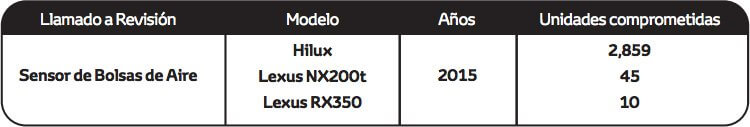
Es preciso señalar que a la fecha no se han registrado casos en nuestro país
por esta condición que hayan comprometido la seguridad del vehículo ni la de
sus ocupantes, siendo las medidas
adoptadas de carácter estrictamente preventivas y realizadas con el fin de
dar tranquilidad y seguridad a todos nuestros clientes. Al ser un Llamado a
Revisión global, nuestra casa matriz ha
informado que, para algunos mercados como el nuestro, el abastecimiento de
los componentes no cuenta con fecha estimada de llegada. En este sentido,
para poder determinar si su
vehículo se encuentra involucrado en el Llamado a Revisión, les solicitamos
ingresar a nuestra página web www.toyotaperu.com.pe en el link denominado
"Llamado a Revisión", ingresando
su número de identificación vehicular-VIN, a fin de verificar si su vehículo
se encuentra comprendido dentro de la medida preventiva.
En caso su vehículo se encuentre comprendido y se realice la confirmación de
la disponibilidad de los componentes, Toyota del Perú S.A. a través de sus
concesionarios a nivel nacional,
inspeccionará las unidades y a partir de ello determinará si es necesario o
no el reemplazo de algún componente. Le recordamos que las revisiones
preventivas no tendrán costo alguno. Para
cualquier consulta adicional puede comunicarse gra tuitamente con el centro
de atención al cliente al teléfono 0-800- 00669 (Horario de atención de L-V
de 8:30am -5:00 pm) y/o escribir
al correo electrónico cac@toyotape ru.com.pe. Toyota del Perú agradece su
preferencia y comprensión por los inconvenientes que éste Llamado a Revisión
preventivo pueda ocasionarle,
sin embargo, nuestro objetivo es brindarle un producto de alta calidad y
buscar su entera satisfacción.
ADVERTENCIA A NUESTROS CLIENTES
TOYOTA DEL PERÚ S.A. - COMUNICA "LLAMADO A REVISIÓN VOLUNTARIO DE
RESORTE DE LA VÁLVULA DEL MOTOR"
Toyota del Perú S.A. informa a sus clientes que nuestra casa matriz ha
implementado un Llamado a Revisión preventivo y voluntario en diferentes
mercados, incluyendo el nuestro, con relación al Resorte de Válvula del
Motor, debido al diseño del resorte de la válvula durante la fabricación,
pudo producirse una variación de la resistencia a la fatiga del metal y
materia extraña en el material del resorte, la carga de rendimiento podría
exceder la resistencia a la fatiga del resorte de la válvula y
potencialmente fracturarse. Si el resorte de la válvula se fractura, el
motor puede detenerse mientras conduce y es posible que no pueda
reiniciarlo, lo que aumenta el riesgo de seguridad. Dichas medidas han sido
diseñadas obedeciendo nuestras políticas de control de calidad a fin de
evitar cualquier situación anómala que pudiera presentarse a futuro en los
vehículos comprendidos de acuerdo a las características en el siguiente
cuadro:
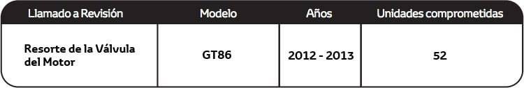
Es preciso señalar que a la fecha no se han registrado casos en nuestro país
por esta condición que hayan comprometido la seguridad del vehículo ni la de
sus ocupantes, siendo las medidas adoptadas de carácter estrictamente
preventivas y realizadas con el fin de dar tranquilidad y seguridad a todos
nuestros clientes. Al ser un Llamado a Revisión global, nuestra casa matriz
ha informado que, para algunos mercados como el nuestro, la
contramedida a implementar no cuenta con fecha estimada de
llegada, estamos realizando el máximo esfuerzo para resolver
esta situación a la brevedad. En este sentido, para poder determinar si su
vehículo se encuentra involucrado en el Llamado a Revisión, les solicitamos
ingresar a nuestra página web www.toyotaperu.com.pe en el link denominado
"Llamado a Revisión", ingresando su número de
identificación veh icular - VIN, a fin de verificar si su vehículo se
encuentra comprendido dentro de la medida preventiva. En caso su vehículo se
encuentre comprendido, agradecemos se sirva llenar el formulario requerido
en la web con todos los datos solicitados, con la finalidad de que cuando
tengamos disponibilidad de los componentes podamos atenderlos
progresivamente a través de nuestra red de concesionarios autorizados,
quienes inspeccionarán las unidades y a partir de ello determinarán si es
necesario o no el reemplazo de algún componente. Le recordamos que las
revisiones preventivas no tendrán costo alguno. Para cualquier consulta
adicional puede comunicarse gratuitamente con el centro de atención al
cliente al teléfono 0-800- 00669 (Horario de atención de L-V de 8:30 am
-5:00 pm) y/o escribir al correo electrónico cac@toyotaperu.com.pe. Toyota del Perú agradece su
preferencia y comprensión por los inconvenientes que este Llamado a Revisión
preventivo pueda ocasionarle. Sin embargo, nuestro objetivo es brindarle un
producto de alta calidad y buscar su entera satisfacción.
ADVERTENCIA A NUESTROS CLIENTES
TOYOTA DEL PERÚ S.A. - COMUNICA "LLAMADO A REVISIÓN VOLUNTARIO -
CONJUNTO DEL SENSOR DE AIRBAG"
Toyota del Perú S.A. informa a sus clientes que nuestra casa matriz ha
implementado un Llamado a Revisión preventivo y voluntario en diferentes
mercados, incluyendo el nuestro, con relación al módulo de control de la
bolsa de aire para el sistema de restricción suplementario (SRS ECU), en los
vehículos involucrados podrían haber sido fabricados con circuitos
integrados (IC) los cuales son susceptibles a un cortocircuito interno.
Cuando se exponen a una onda eléctrica inductiva de varios componentes
eléctricos del vehículo, estos IC podrían experimentar un cortocircuito
interno que crea un flujo de corriente anormal y un aumento del calor. Si
esto ocurre, existe la posibilidad de que el IC se dañe. En ciertos casos,
la luz de advertencia SRS para las bolsas de aire podría iluminarse y las
bolsas de aire y/o los pretensores del cinturón de seguridad podrían
desactivarse. En otros casos, estos sistemas podrían desplegarse
inadvertidamente. Una bolsa de aire que se desactiva o despliega
inadvertidamente puede, bajo ciertas circunstancias, aumentar el riesgo de
lesiones o la posibilidad de un choque. Dichas medidas han sido diseñadas
obedeciendo nuestras políticas de control de calidad a fin de evitar
cualquier situación anómala que pudiera presentarse a futuro en los
vehículos comprendidos de acuerdo a las características en el siguiente
cuadro:
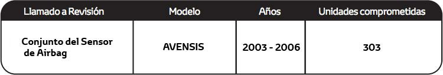
Es preciso señalar que a la fecha no se han registrado casos en nuestro país
por esta condición que hayan comprometido la seguridad del vehículo ni la de
sus ocupantes, siendo las medidas adoptadas de carácter estrictamente
preventivas y realizadas con el fin de dar tranquilidad y seguridad a todos
nuestros clientes. Al ser un Llamado a Revisión global, nuestra casa matriz
ha informado que, para algunos mercados como el nuestro, la
contramedida a implementar no cuenta con fecha estimada de
llegada, estamos realizando el máximo esfuerzo para resolver
esta situación a la brevedad. En este sentido, para poder determinar si su
vehículo se encuentra involucrado en el Llamado a Revisión, les solicitamos
ingresar a nuestra página web www.toyotaperu.com.pe en el link denominado
"Llamado a Revisión", ingresando su número de
identificación vehicular - VIN, a fin de verificar si su vehículo se
encuentra comprendido dentro de la medida preventiva. En caso su vehículo se
encuentre comprendido, agradecemos se sirva llenar el formulario requerido
en la web con todos los datos solicitados, con la finalidad de que cuando
tengamos disponibilidad de los componentes podamos atenderlos
progresivamente a través de nuestra red de concesionarios autorizados,
quienes inspeccionarán las unidades y a partir de ello determinará si es
necesario o no el reemplazo de algún componente. Le recordamos que las
revisiones preventivas no tendrán costo alguno. Para cualquier consulta
adicional puede comunicarse gratuitamente con el centro de atención al
cliente al teléfono 0-800- 00669 (Horario de atención de L-V de 8:30 am
-5:00 pm) y/o escribir al correo electrónico cac@toyotaperu.com.pe. Toyota del Perú agradece su
preferencia y comprensión por los inconvenientes que este Llamado a Revisión
preventivo pueda ocasionarle. Sin embargo, nuestro objetivo es brindarle un
producto de alta calidad y buscar su entera satisfacción
ADVERTENCIA A NUESTROS CLIENTES
TOYOTA DEL PERÚ S.A. - COMUNICA ""LLAMADO A REVISIÓN VOLUNTARIO
DE SENSOR DE VELOCIDAD HINO ZS"
Por medio de la presente informamos, que nuestra casa matriz HINO MOTORS,
LTD, obedeciendo a sus políticas de control y calidad a nivel mundial ha
implementado un llamado a revisión preventivo, gratuito y voluntario, en
diferentes mercados, incluyendo el nuestro; con relación al Sensor de
Velocidad de las unidades modelo HINO ZS. Para nuestro mercado se encuentran
comprendidas 44 unidades, con las siguientes características:
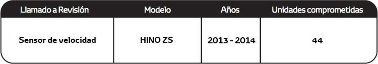
Sobre el particular, debido a que el sensor de velocidad se fabrica con
materiales que tienen diferentes propiedades de expansión térmica, y en caso
de que dicho sensor este expuesto a altas temperaturas; la proporción de los
materiales podrían expandirse, generando que las partes puedan obstruirse
entre ellas, lo que podría ocasionar un circuito abierto. En caso se
presente esta condición ocasionaría que las luces de advertencia del sistema
de frenos o transmisión se enciendan y la aguja del velocímetro este
inoperativa o vibre durante la conducción, lo que potencialmente podría
dificultar la maniobrabilidad del camión al desconocer la velocidad real de
circulación.
Cabe mencionar, que, a la fecha, en nuestro país no se han reportado
desperfectos o fallas algunas relacionadas al presente Llamado a Revisión.
Al estar implementándose dicho llamado en diferentes países, nuestra casa
matriz está realizando el envío de los componentes de manera
progresiva en todos los mercados involucrados; sin embargo,
actualmente no tenemos confirmación exacta de la fecha de arribo de los
componentes para la atención de nuestros clientes involucrados. En ese
sentido, queremos solicitarle por favor que nos escriban a nuestro correo
electrónico de atención al cliente cac@toyotaperu.com.pe con la
finalidad de incluirlo en la lista de espera de atención cuando dispongamos
de dichos componentes.
Informamos a nuestros clientes que Toyota del Perú S.A. ha implementado un
Llamado a Revisión preventivo y voluntario en diferentes mercados con
relación a los airbag fabricados por el proveedor mundial de bolsas de aire
Takata Corporation.
El Llamado a Revisión obedece a una medida preventiva debido a un posible
desperfecto en el ensamblaje del detonador que podría causar un despliegue
incorrecto de la bolsa de aire; adicionalmente existe la posibilidad de un
aumento de ingreso de humedad en los infladores lo que podría ocasionar su
ruptura. Cabe mencionar que en nuestro país, no se ha presentado ningún caso
relacionado con dicha condición.
Toyota del Perú S.A. informa que las medidas adoptadas se encuentran fundadas
en la búsqueda de estándares de alta calidad en atención al cliente y su
compromiso constante con la mejora de calidad brindada.
Para mayor información: Los clientes pueden comunicarse gratuitamente al
teléfono 0-800-00669 (Horario de atención de L-V de 8:30am -5:00 pm) y/o
escribir al correo electrónico cac@toyotaperu.com.pe.
Las consultas deben realizarse de preferencia en los siguientes
navegadores: Chrome, Mozilla, Firefox, Safari o Internet Explorer 8 o
superior.
Para confirmar si su vehículo se encuentra comprendido en la medida, por
favor ingrese su número de VIN:
Informamos a nuestros clientes que Toyota del Perú S.A. ha implementado un
Llamado a Revisión preventivo y voluntario en diferentes mercados con
relación a los airbag fabricados por el proveedor mundial de bolsas de aire
Takata Corporation.
El Llamado a Revisión obedece a una medida preventiva debido a un posible
desperfecto en el ensamblaje del detonador que podría causar un despliegue
incorrecto de la bolsa de aire; adicionalmente existe la posibilidad de un
aumento de ingreso de humedad en los infladores lo que podría ocasionar su
ruptura. Cabe mencionar que en nuestro país, no se ha presentado ningún caso
relacionado con dicha condición.
Toyota del Perú S.A. informa que las medidas adoptadas se encuentran fundadas
en la búsqueda de estándares de alta calidad en atención al cliente y su
compromiso constante con la mejora de calidad brindada.
Para mayor información: Los clientes pueden comunicarse gratuitamente al
teléfono 0-800-00669 (Horario de atención de L-V de 8:30am -5:00 pm) y/o
escribir al correo electrónico cac@toyotaperu.com.pe.
Las consultas deben realizarse de preferencia en los siguientes
navegadores: Chrome, Mozilla, Firefox, Safari o Internet Explorer 8 o
superior.
Para confirmar si su vehículo se encuentra comprendido en la medida, por
favor ingrese su número de VIN:
ADVERTENCIA A NUESTROS CLIENTES
TOYOTA DEL PERÚ S.A. - COMUNICA "LLAMADO A REVISIÓN VOLUNTARIO DE
AIRBAGS DE CORTINA"
Toyota del Pena S.A. informa a sus clientes que nuestra casa matriz ha
implementado un Llamado a Revisión preventivo y voluntario en diferentes
mercados, incluyendo el nuestro, relacionado al sistema airbag de cortina,
debido a que existe la posibilidad que cuando la rueda posterior sufra un
impacto al pasar por un hoyo o se produzca una abolladura, la computadora
del sistema de bolsas de aire pueda determinarlo como un impacto lateral del
vehículo debido a una inapropiada programación de la computadora del sistema
en las unidades en mención. Si esto ocurriera, las bolsas de aire de cortina
podrían desplegarse de manera involuntaria. Dichas medidas han sido
disenadas obedeciendo nuestras políticas de control de calidad a fin de
evitar cualquier situación anómala que pudiera presentarse a futuro en los
vehículos comprendidos de acuerdo a las características en el siguiente
cuadro:
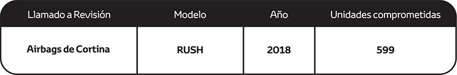
Es preciso señalar que a la fecha no se han registrado casos en nuestro país
por esta condición, que hayan comprometido la seguridad del vehículo ni la
de sus ocupantes, siendo las medidas adoptadas de carácter estrictamente
preventivas y realizadas con el fin de dar tranquilidad y seguridad a todos
nuestros clientes. Al ser un Llamado a Revisión global, nuestra casa matriz
ha informado que, para algunos mercados como el nuestro, la
contramedida a implementar no cuenta con fecha estimada de
llegada, estamos realizando el máximo esfuerzo para resolver
esta situación a la brevedad. En este sentido, para poder determinar si su
vehículo se encuentra involucrado en el Llamado a Revisión, les solicitamos
ingresar a nuestra página web www.toyotaperu.com.pe en el link
denominado "Llamado a Revisión", ingresando su número de
identificación vehícular - VIN, a fin de verificar si su vehículo se
encuentra comprendido dentro de la medida preventiva. En caso su vehículo se
encuentre comprendido, agradecemos se sirva llenar el formulario requerido
en la web con todos los datos solicitados, con la finalidad que cuando
tengamos disponibilidad de los componentes podamos atenderlos
progresivamente a través de nuestra red de concesionarios autorizados,
quienes inspeccionarán las unidades y a partir de ello determinarán si es
necesario o no el reemplazo de algún componente. Le recordamos que las
revisiones preventivas no tendrán costo. Para cualquier consulta adicional
puede comunicarse gratuitamente con el centro de atención al cliente al
teléfono 0-800-00669 (Horario de atención de L-V de 8:30 am -5:00 pm) y/o
escribir al correo electrónico cac@toyotaperu.com.pe
. Toyota del Perú agradece su preferencia y comprensión por los
inconvenientes que este Llamado a Revisión preventivo pueda ocasionarle. Sin
embargo, nuestro objetivo es brindarle un producto de alta calidad y buscar
su entera satisfacción.
ADVERTENCIA A NUESTROS CLIENTES
TOYOTA DEL PERU S.A. COMUNICA “LLAMADO A REVISION VOLUNTARIO DE FUNDA
POSTERIOR DE DIFERENCIAL HINO DUTRO 300”
Por medio de la presente informamos que nuestra casa matriz HINO MOTORS LTD.
Obedeciendo a sus políticas de control y calidad a nivel mundial ha
implementado un Llamado a Revisión preventivo gratuito y voluntario, en
diferentes mercados, incluyendo el nuestro; con relación a la funda
posterior de diferencial Hino 300. Para nuestro mercado se encuentran
comprendidas 60 unidades con las siguientes características:
Sobre el particular, Debido a un proceso de soldadura impropio, durante la
producción, la funda del eje posterior puede haber sido ensamblada de una
manera incorrecta. En esta situación, se aplica un esfuerzo mayor en los
ejes y / o los rodamientos del cubo lo cual puede ocasionar que el vehículo
no llegue a operar correctamente. Cabe mencionar, que a la fecha, en nuestro
país no se han reportado desperfectos o fallas algunas relacionadas al
presente Llamado a Revisión.
Al estar implementándose dicho llamado en diferentes países, nuestra casa
matriz está realizando el envío de los componentes de manera progresiva en
todos los mercados involucrados; sin embargo, actualmente no tenemos
confirmación exacta de la fecha de arribo de los componentes para la
atención de nuestros clientes involucrados. En ese sentido, queremos
solicitarle por favor que nos escriban a nuestro correo electrónico de
atención al cliente cac@toyotaperu.com.pe con la
finalidad de incluirlo en la lista de espera de atención cuando dispongamos
de dichos componentes. Asimismo, cabe mencionar que el presente Llamado a
Revisión no genera ningún costo al cliente y puede ser realizado,
dependiendo de la disponibilidad del concesionario autorizado Hino. En caso
requieran más información pueden llamarnos al teléfono gratuito 0800-00669
(Horario de atención de L-V de 8:30 am -5:15 pm).
Le reiteramos nuestro compromiso de brindarle el mejor servicio y nos ponemos
a su disposición para cualquier consulta.
TOYOTA DEL PERÚ S.A.
ADVERTENCIA A NUESTROS CLIENTES
TOYOTA DEL PERÚ S.A. – COMUNICA “LLAMADO A REVISIÓN VOLUNTARIO DE
CINTURÓN DE SEGURIDAD INTERNO DEL LADO DEL CONDUCTOR”.
Toyota del Perú S.A. informa a sus clientes que nuestra casa matriz ha
implementado un Llamado a Revisión preventivo y voluntario en diferentes
mercados, incluyendo el nuestro, relacionado al cinturón de seguridad
interno del lado del conductor, los vehículos involucrados cuentan con un
sistema de recordatorio del cinturón de seguridad del conductor, debido a un
montaje incorrecto de los contactos eléctricos en el interruptor de
recordatorio, existe la posibilidad de que se produzca un desgaste anormal
en los contactos después del uso repetido del cinturón de seguridad y se
puedan depositar residuos externos. En esta condición, el recordatorio del
cinturón de seguridad no se puede desactivar incluso cuando el cinturón de
seguridad está correctamente abrochado debido a un cortocircuito entre los
contactos. Dichas medidas han sido diseñadas obedeciendo nuestras políticas
de control de calidad a fin de evitar cualquier situación anómala que
pudiera presentarse a futuro en los vehículos comprendidos de acuerdo a las
características en el siguiente cuadro:
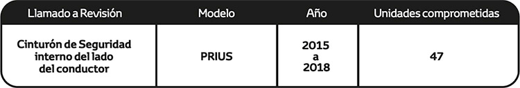
Es preciso señalar que a la fecha no se han registrado casos en nuestro país
por esta condición, que hayan comprometido la seguridad del vehículo ni la
de sus ocupantes, siendo las medidas adoptadas de carácter estrictamente
preventivas y realizadas con el fin de dar tranquilidad y seguridad a todos
nuestros clientes. Al ser un Llamado a Revisión global, nuestra casa matriz
ha informado que, para algunos mercados como el nuestro, la contramedida a
implementar no cuenta con fecha estimada de llegada, estamos realizando el
máximo esfuerzo para resolver esta situación a la brevedad. En este sentido,
para poder determinar si su vehículo se encuentra involucrado en el Llamado
a Revisión, les solicitamos ingresar a nuestra página web
www.toyotaperu.com.pe en el link denominado "Llamado a Revisión", ingresando
su número de identificación vehicular - VIN, a fin de verificar si su
vehículo se encuentra comprendido dentro de la medida preventiva. En caso su
vehículo se encuentre comprendido, agradecemos se sirva llenar el formulario
requerido en la web con todos los datos solicitados, con la finalidad que
cuando tengamos disponibilidad de los componentes podamos atenderlos
progresivamente a través de nuestra red de concesionarios autorizados,
quienes inspeccionarán las unidades y a partir de ello determinarán si es
necesario o no el reemplazo de algún componente. Le recordamos que las
revisiones preventivas no tendrán costo. Para cualquier consulta adicional
puede comunicarse gratuitamente con el centro de atención al cliente al
teléfono 0-800- 00669 (Horario de atención de L-V de 8:30 am -5:00 pm) y/o
escribir al correo electrónico cac@toyotaperu.com.pe. Toyota
del Perú agradece su preferencia y comprensión por los inconvenientes que
este Llamado a Revisión preventivo pueda ocasionarle. Sin embargo, nuestro
objetivo es brindarle un producto de alta calidad y buscar su entera
satisfacción.
TOYOTA DEL PERÚ S.A.
ADVERTENCIA A NUESTROS CLIENTES
TOYOTA DEL PERÚ S.A. - COMUNICA "LLAMADO A REVISIÓN VOLUNTARIO DE
BRAZO DE SUSPENSIÓN INFERIOR DELANTERO”.
Toyota del Perú S.A. informa a sus clientes que nuestra casa matriz ha
implementado un Llamado a Revisión preventivo y voluntario en diferentes
mercados, incluyendo el nuestro, los vehículos involucrados están equipados
con brazos de suspensión inferior delanteros que conectan de las ruedas al
travesaño delantero del vehículo. Debido a ciertas condiciones de producción
inadecuadas en el proveedor de material de acero, dicho componente podría
tener algunas grietas en su superficie. Si un vehículo presenta dicha
condición y es usado durante su vida útil con aceleraciones (rápidas) y
desaceleraciones, las grietas podrían propagarse y el brazo puede separarse
del conjunto de la rueda delantera. Esto puede provocar una pérdida del
control del vehículo y aumentar el riesgo de un choque. Dichas medidas han
sido diseñadas obedeciendo nuestras políticas de control de calidad a fin de
evitar cualquier situación anómala que pudiera presentarse a futuro en los
vehículos comprendidos de acuerdo con las características en el siguiente
cuadro:
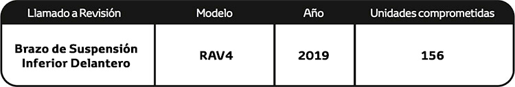
Es preciso señalar que a la fecha no se han registrado casos en nuestro país
por esta condición, que hayan comprometido la seguridad del vehículo ni la
de sus ocupantes, siendo las medidas adoptadas de carácter estrictamente
preventivas y realizadas con el fin de dar tranquilidad y seguridad a todos
nuestros clientes. Al ser un Llamado a Revisión global, nuestra casa matriz
ha informado que, para algunos mercados como el nuestro, la
contramedida a implementar no cuenta con fecha estimada de llegada
considerando la situación actual de emergencia mundial, estamos
realizando el máximo esfuerzo para resolver esta situación a la brevedad. En
este sentido, para poder determinar si su vehículo se encuentra involucrado
en el Llamado a Revisión, les solicitamos ingresar a nuestra página web www.toyotaperu.com.pe en el link denominado
"Llamado a Revisión", ingresando su número de
identificación veh ícular - VI N, a fin de verificar si su vehículo se
encuentra comprendido dentro de la medida preventiva. En caso su vehículo se
encuentre comprendido, agradecemos se sirva llenar el formulario requerido
en la web con todos los datos solicitados, con la finalidad que cuando
tengamos disponibilidad de los componentes podamos atenderlos
progresivamente a través de nuestra red de concesionarios autorizados,
quienes inspeccionarán las unidades y a partir de ello determinarán si es
necesario o no el reemplazo de algún componente. Le recordamos que las
revisiones preventivas no tendrán costo. Para cualquier consulta adicional
puede comunicarse gratuitamente con el centro de atención al cliente al
teléfono 0-800- 00669 (Horario de atención de L-V de 8:30 am -5:00 pm) y/o
escribir al correo electrónico cac@toyotaperu.com.pe. Toyota
del Perú agradece su preferencia y comprensión por los inconvenientes que
este Llamado a Revisión preventivo pueda ocasionarle. Sin embargo, nuestro
objetivo es brindarle un producto de alta calidad y buscar su entera
satisfacción.
TOYOTA DEL PERÚ S.A.
ADVERTENCIA A NUESTROS CLIENTES
TOYOTA DEL PERÚ S.A. - COMUNICA "LLAMADO A REVISIÓN VOLUNTARIO DE
BRAZO DE SUSPENSIÓN INFERIOR DELANTERO”.
Toyota del Perú S.A. informa a sus clientes que nuestra casa matriz ha
implementado un Llamado a Revisión preventivo y voluntario en diferentes
mercados, incluyendo el nuestro, relacionado al módulo de control de airbag,
los vehículos involucrados están equipados con dicho módulo de control de
airbag para el sistema de restricción suplementaria denominado (SRS ECU).
Esta ECU contiene un ASIC o circuito integrado que controla la comunicación
de las señales del sensor de impacto. Este ASIC no tiene suficiente
protección contra transitorios eléctricos negativos que pueden ser generados
en ciertos eventos severos de colisión frontal antes de una desaceleración
significativa. En estos casos, el sensor de impacto puede crear un
transitorio eléctrico negativo de fuerza y duración suficientes pudiendo
dañar el ASIC antes de recibir la señal de despliegue en la SRS ECU. Esto
puede producir un incompleto o no despliegue de las bolsas de aire y/o
pretensores. Dichas medidas han sido diseñadas obedeciendo nuestras
políticas de control de calidad a fin de evitar cualquier situación anómala
que pudiera presentarse a futuro en los vehículos comprendidos de acuerdo a
las características en el siguiente cuadro:
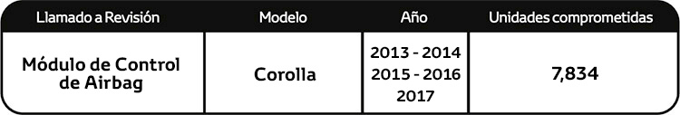
Es preciso señalar que a la fecha no se han registrado casos en nuestro país
por esta condición, que hayan comprometido la seguridad del vehículo ni la
de sus ocupantes, siendo las medidas adoptadas de carácter estrictamente
preventivas y realizadas con el fin de dar tranquilidad y seguridad a todos
nuestros clientes. Al ser un Llamado a Revisión global, nuestra casa matriz
ha informado que, para algunos mercados como el nuestro,
lacontramedida a implementar no cuenta con fecha estimada de llegada
considerando la situación actual de emergencia mundial, estamos
realizando el máximo esfuerzo para resolver esta situación a la brevedad. En
este sentido, para poder determinar si su vehículo se encuentra involucrado
en el Llamado a Revisión, les solicitamos ingresar a nuestra página web www.toyotaperu.com.pe en el link denominado
"Llamado a Revisión", ingresando su número de
identificación veh ícular - VI N, a fin de verificar si su vehículo se
encuentra comprendido dentro de la medida preventiva. En caso su vehículo se
encuentre comprendido, agradecemos se sirva llenar el formulario requerido
en la web con todos los datos solicitados, con la finalidad que cuando
tengamos disponibilidad de los componentes podamos atenderlos
progresivamente a través de nuestra red de concesionarios autorizados,
quienes inspeccionarán las unidades y a partir de ello determinarán si es
necesario o no el reemplazo de algún componente. Le recordamos que las
revisiones preventivas no tendrán costo. Para cualquier consulta adicional
puede comunicarse gratuitamente con el centro de atención al cliente al
teléfono 0-800- 00669 (Horario de atención de L-V de 8:30 am -5:00 pm) y/o
escribir al correo electrónico cac@toyotaperu.com.pe. Toyota
del Perú agradece su preferencia y comprensión por los inconvenientes que
este Llamado a Revisión preventivo pueda ocasionarle. Sin embargo, nuestro
objetivo es brindarle un producto de alta calidad y buscar su entera
satisfacción
TOYOTA DEL PERÚ S.A.
ADVERTENCIA A NUESTROS CLIENTES
TOYOTA DEL PERÚ S.A. - COMUNICA "LLAMADO A REVISIÓN VOLUNTARIO DE MÓDULO DE ADMINISTRACIÓN DE ENERGÍA- PRIUS”.
Toyota del Perú S.A. informa a sus clientes que nuestra casa matriz ha implementado un Llamado a Revisión preventivo y voluntario en diferentes mercados, incluyendo el nuestro, los vehículos involucrados al ser conducidos con aceleraciones bruscas y repentinas, probablemente generen que determinados transistores ubicados dentro del módulo de potencia inteligente (1PM) en el inversor del sistema híbrido, puedan presentar un mayor estrés térmico y/o alto voltaje que con el tiempo podría dañarse, generando que se encienda un aviso de advertencia en el panel de instrumentos, causando que el sistema híbrido se apague y el vehículo pierda potencia motriz mientras se conduce a altas velocidades, lo que incrementaría la probabilidad de una colisión. Es importante precisar que, en esta condición, la dirección asistida y el frenado no se verán afectados. Dichas medidas han sido diseñadas obedeciendo nuestras políticas de control de calidad a fin de evitar cualquier situación anómala que pudiera presentarse a futuro en los vehículos comprendidos de acuerdo con las características en el siguiente cuadro:
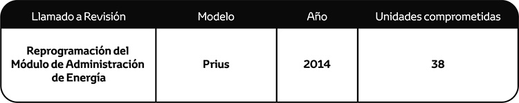
Es preciso señalar que a la fecha no se han registrado casos en nuestro país por esta condición, que hayan comprometido la seguridad del vehículo ni la de sus ocupantes, siendo las medidas adoptadas de carácter estrictamente preventivas y realizadas con el fin de dar tranquilidad y seguridad a todos nuestros clientes. Al ser un Llamado a Revisión global, nuestra casa matriz ha informado que, para algunos mercados como el nuestro, la contramedida a implementar no cuenta con fecha estimada de llegada considerando la situación actual de emergencia mundial, estamos realizando el máximo esfuerzo para resolver esta situación a la brevedad. En este sentido, para poder determinar si su vehículo se encuentra involucrado en el Llamado a Revisión, les solicitamos ingresar a nuestra página web www.toyotaperu.com.pe en el link denominado "Llamado a Revisión", ingresando su número de identificación vehicular - VIN, a fin de verificar si su vehículo se encuentra comprendido dentro de la medida preventiva. En caso su vehículo se encuentre comprendido, agradecemos se sirva llenar el formulario requerido en la web con todos los datos solicitados, con la finalidad que cuando tengamos disponibilidad de la contramedida podamos atenderlo progresivamente a través de nuestra red de concesionarios autorizados, quienes inspeccionarán las unidades y a partir de ello determinarán si es necesaria la reprogramación. Le recordamos que las revisiones preventivas no tendrán costo. Para cualquier consulta adicional puede comunicarse gratuitamente con el centro de atención al cliente al teléfono 0-800-00669 (Horario de atención de L-V de 8:30 am - 5:00 pm) y/o escribir al correo electrónico cac@toyotaperu.com.pe. Toyota del Perú agradece su preferencia y comprensión por los inconvenientes que este Llamado a Revisión preventivo pueda ocasionarle. Sin embargo, nuestro objetivo es brindarle un producto de alta calidad y buscar su entera satisfacción.
TOYOTA DEL PERÚ S.A.
ADVERTENCIA A NUESTROS CLIENTES
TOVOTA DEL PERÚ S.A. - COMUNICA 11LLAMADO A REVISIÓN VOLUNTARIO DE BOMBA DE COMBUSTIBLE TOVOTA / LEXUS".
Toyota del Perú S.A. informa a sus clientes que nuestra casa matriz ha implementado un Llamado a Revisión preventivo y voluntario en diferentes mercados, incluyendo el nuestro, relacionado a la bomba de combustible, los vehículos involucrados están equipados con una bomba de combustible de baja presión ubicada en el tanque de combustible, que suministra presión al sistema de inyección de combustible. Estas bombas incluyen impulsores fabricados con menor densidad y con menor resistencia superficial. Si estos impulsores estuvieron expuestos al secado del solvente de producción durante períodos más largos, podrían ocurrir niveles más altos de agrietamiento superficial. En esta condición, puede ocurrir una absorción excesiva de combustible, lo que resulta en una mayor deformación del impulsor. En algunos casos, el impulsor puede deformarse hasta un punto que crea una interferencia suficiente con el cuerpo de la bomba para hacer que la bomba de combustible deje de funcionar. Una bomba de combustible inoperativa, debido a estas condiciones, podría provocar la iluminación de los indicadores de advertencia principal y de control del motor, funcionamiento irregular del motor, motor sin arranque y/o bloqueo del vehículo mientras se conduce a baja velocidad. Sin embargo, en raras ocasiones, el vehículo se puede atascar mientras se conduce a velocidades más altas, lo que aumenta el riesgo de un choque. Dichas medidas han sido diseñadas obedeciendo nuestras políticas de control de calidad a fin de evitar cualquier situación anómala que pudiera presentarse a futuro en los vehículos comprendidos de acuerdo a las características en el siguiente cuadro:
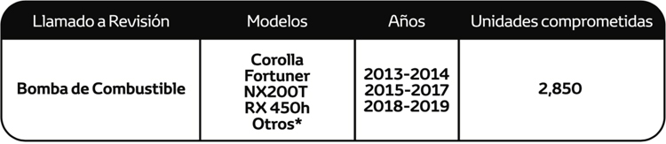
Es preciso señalar que a la fecha no se han registrado casos en nuestro país por esta condición, que hayan comprometido la seguridad del vehículo ni la de sus ocupantes, siendo las medidas adoptadas de carácter estrictamente preventivas y realizadas con el fin de dar tranquilidad y seguridad a todos nuestros clientes. Al ser un Llamado a Revisión global, nuestra casa matriz ha informado que, para algunos mercados como el nuestro, la contramedida a implementar no cuenta con fecha estimada de llegada considerando la situación actual de emergencia mundial, estamos realizando el máximo esfuerzo para resolver esta situación a la brevedad. En este sentido, para poder determinar si su vehículo se encuentra involucrado en el Llamado a Revisión, les solicitamos ingresar a nuestra página web www.toyotaperu.com.pe en el link denominado "Llamado a Revisión", ingresando su número de identificación vehicular - VIN, a fin de verificar si su vehículo se encuentra comprendido dentro de la medida preventiva. En caso su vehículo se encuentre comprendido, agradecemos se sirva llenar el formulario requerido en la web con todos los datos solicitados, con la finalidad que cuando tengamos disponibilidad de los componentes podamos atenderlos progresivamente a través de nuestra red de concesionarios autorizados, quienes inspeccionarán las unidades y a partir de ello determinarán si es necesario o no el reemplazo de algún componente. Le recordamos que las revisiones preventivas no tendrán costo. Para cualquier consulta adicional puede comunicarse gratuitamente con el centro de atención al cliente al teléfono 0-800-00669 (Horario de atención de L-V de 8:30 am - 5:00 pm) y/o escribir al correo electrónico cac@toyotaperu.com.pe. Toyota del Perú agradece su preferencia y comprensión por los inconvenientes que este Llamado a Revisión preventivo pueda ocasionarle. Sin embargo, nuestro objetivo es brindarle un producto de alta calidad y buscar su entera satisfacción.
TOYOTA DEL PERÚ S.A.
ADVERTENCIA A NUESTROS CLIENTES
TOVOTA DEL PERÚ S.A. - COMUNICA 11LLAMADO A REVISIÓN VOLUNTARIO DE BOMBA DE COMBUSTIBLE TOVOTA / LEXUS".
Toyota del Perú S.A. informa a sus clientes que nuestra casa matriz ha implementado un Llamado a Revisión preventivo y voluntario en diferentes mercados, incluyendo el nuestro, relacionado a la bomba de combustible, los vehículos involucrados están equipados con una bomba de combustible de baja presión ubicada en el tanque de combustible, que suministra presión al sistema de inyección de combustible. Estas bombas incluyen impulsores fabricados con menor densidad y con menor resistencia superficial. Si estos impulsores estuvieron expuestos al secado del solvente de producción durante períodos más largos, podrían ocurrir niveles más altos de agrietamiento superficial. En esta condición, puede ocurrir una absorción excesiva de combustible, lo que resulta en una mayor deformación del impulsor. En algunos casos, el impulsor puede deformarse hasta un punto que crea una interferencia suficiente con el cuerpo de la bomba para hacer que la bomba de combustible deje de funcionar. Una bomba de combustible inoperativa, debido a estas condiciones, podría provocar la iluminación de los indicadores de advertencia principal y de control del motor, funcionamiento irregular del motor, motor sin arranque y/o bloqueo del vehículo mientras se conduce a baja velocidad. Sin embargo, en raras ocasiones, el vehículo se puede atascar mientras se conduce a velocidades más altas, lo que aumenta el riesgo de un choque. Dichas medidas han sido diseñadas obedeciendo nuestras políticas de control de calidad a fin de evitar cualquier situación anómala que pudiera presentarse a futuro en los vehículos comprendidos de acuerdo a las características en el siguiente cuadro:
Es preciso señalar que a la fecha no se han registrado casos en nuestro país por esta condición, que hayan comprometido la seguridad del vehículo ni la de sus ocupantes, siendo las medidas adoptadas de carácter estrictamente preventivas y realizadas con el fin de dar tranquilidad y seguridad a todos nuestros clientes. Al ser un Llamado a Revisión global, nuestra casa matriz ha informado que, para algunos mercados como el nuestro, la contramedida a implementar no cuenta con fecha estimada de llegada considerando la situación actual de emergencia mundial, estamos realizando el máximo esfuerzo para resolver esta situación a la brevedad. En este sentido, para poder determinar si su vehículo se encuentra involucrado en el Llamado a Revisión, les solicitamos ingresar a nuestra página web www.toyotaperu.com.pe en el link denominado "Llamado a Revisión", ingresando su número de identificación vehicular - VIN, a fin de verificar si su vehículo se encuentra comprendido dentro de la medida preventiva. En caso su vehículo se encuentre comprendido, agradecemos se sirva llenar el formulario requerido en la web con todos los datos solicitados, con la finalidad que cuando tengamos disponibilidad de los componentes podamos atenderlos progresivamente a través de nuestra red de concesionarios autorizados, quienes inspeccionarán las unidades y a partir de ello determinarán si es necesario o no el reemplazo de algún componente. Le recordamos que las revisiones preventivas no tendrán costo. Para cualquier consulta adicional puede comunicarse gratuitamente con el centro de atención al cliente al teléfono 0-800-00669 (Horario de atención de L-V de 8:30 am - 5:00 pm) y/o escribir al correo electrónico cac@toyotaperu.com.pe. Toyota del Perú agradece su preferencia y comprensión por los inconvenientes que este Llamado a Revisión preventivo pueda ocasionarle. Sin embargo, nuestro objetivo es brindarle un producto de alta calidad y buscar su entera satisfacción.
TOYOTA DEL PERÚ S.A.
ADVERTENCIA A NUESTROS CLIENTES
TOVOTA DEL PERÚ S.A. - COMUNICA 11LLAMADO A REVISIÓN VOLUNTARIO DE BOMBA DE COMBUSTIBLE TOVOTA / LEXUS".
Toyota del Perú S.A. informa a sus clientes que nuestra casa matriz ha implementado un Llamado a Revisión preventivo y voluntario en diferentes mercados, incluyendo el nuestro, relacionado a la bomba de combustible, los vehículos involucrados están equipados con una bomba de combustible de baja presión ubicada en el tanque de combustible, que suministra presión al sistema de inyección de combustible. Estas bombas incluyen impulsores fabricados con menor densidad y con menor resistencia superficial. Si estos impulsores estuvieron expuestos al secado del solvente de producción durante períodos más largos, podrían ocurrir niveles más altos de agrietamiento superficial. En esta condición, puede ocurrir una absorción excesiva de combustible, lo que resulta en una mayor deformación del impulsor. En algunos casos, el impulsor puede deformarse hasta un punto que crea una interferencia suficiente con el cuerpo de la bomba para hacer que la bomba de combustible deje de funcionar. Una bomba de combustible inoperativa, debido a estas condiciones, podría provocar la iluminación de los indicadores de advertencia principal y de control del motor, funcionamiento irregular del motor, motor sin arranque y/o bloqueo del vehículo mientras se conduce a baja velocidad. Sin embargo, en raras ocasiones, el vehículo se puede atascar mientras se conduce a velocidades más altas, lo que aumenta el riesgo de un choque. Dichas medidas han sido diseñadas obedeciendo nuestras políticas de control de calidad a fin de evitar cualquier situación anómala que pudiera presentarse a futuro en los vehículos comprendidos de acuerdo a las características en el siguiente cuadro:
Es preciso señalar que a la fecha no se han registrado casos en nuestro país por esta condición, que hayan comprometido la seguridad del vehículo ni la de sus ocupantes, siendo las medidas adoptadas de carácter estrictamente preventivas y realizadas con el fin de dar tranquilidad y seguridad a todos nuestros clientes. Al ser un Llamado a Revisión global, nuestra casa matriz ha informado que, para algunos mercados como el nuestro, la contramedida a implementar no cuenta con fecha estimada de llegada considerando la situación actual de emergencia mundial, estamos realizando el máximo esfuerzo para resolver esta situación a la brevedad. En este sentido, para poder determinar si su vehículo se encuentra involucrado en el Llamado a Revisión, les solicitamos ingresar a nuestra página web www.toyotaperu.com.pe en el link denominado "Llamado a Revisión", ingresando su número de identificación vehicular - VIN, a fin de verificar si su vehículo se encuentra comprendido dentro de la medida preventiva. En caso su vehículo se encuentre comprendido, agradecemos se sirva llenar el formulario requerido en la web con todos los datos solicitados, con la finalidad que cuando tengamos disponibilidad de los componentes podamos atenderlos progresivamente a través de nuestra red de concesionarios autorizados, quienes inspeccionarán las unidades y a partir de ello determinarán si es necesario o no el reemplazo de algún componente. Le recordamos que las revisiones preventivas no tendrán costo. Para cualquier consulta adicional puede comunicarse gratuitamente con el centro de atención al cliente al teléfono 0-800-00669 (Horario de atención de L-V de 8:30 am - 5:00 pm) y/o escribir al correo electrónico cac@toyotaperu.com.pe. Toyota del Perú agradece su preferencia y comprensión por los inconvenientes que este Llamado a Revisión preventivo pueda ocasionarle. Sin embargo, nuestro objetivo es brindarle un producto de alta calidad y buscar su entera satisfacción.
TOYOTA DEL PERÚ S.A.
ADVERTENCIA A NUESTROS CLIENTES
TOVOTA DEL PERÚ S.A. - COMUNICA 11LLAMADO A REVISIÓN VOLUNTARIO DE BOMBA DE COMBUSTIBLE TOVOTA / LEXUS".
Toyota del Perú S.A. informa a sus clientes que nuestra casa matriz ha implementado un Llamado a Revisión preventivo y voluntario en diferentes mercados, incluyendo el nuestro, relacionado a la bomba de combustible, los vehículos involucrados están equipados con una bomba de combustible de baja presión ubicada en el tanque de combustible, que suministra presión al sistema de inyección de combustible. Estas bombas incluyen impulsores fabricados con menor densidad y con menor resistencia superficial. Si estos impulsores estuvieron expuestos al secado del solvente de producción durante períodos más largos, podrían ocurrir niveles más altos de agrietamiento superficial. En esta condición, puede ocurrir una absorción excesiva de combustible, lo que resulta en una mayor deformación del impulsor. En algunos casos, el impulsor puede deformarse hasta un punto que crea una interferencia suficiente con el cuerpo de la bomba para hacer que la bomba de combustible deje de funcionar. Una bomba de combustible inoperativa, debido a estas condiciones, podría provocar la iluminación de los indicadores de advertencia principal y de control del motor, funcionamiento irregular del motor, motor sin arranque y/o bloqueo del vehículo mientras se conduce a baja velocidad. Sin embargo, en raras ocasiones, el vehículo se puede atascar mientras se conduce a velocidades más altas, lo que aumenta el riesgo de un choque. Dichas medidas han sido diseñadas obedeciendo nuestras políticas de control de calidad a fin de evitar cualquier situación anómala que pudiera presentarse a futuro en los vehículos comprendidos de acuerdo a las características en el siguiente cuadro:
Es preciso señalar que a la fecha no se han registrado casos en nuestro país por esta condición, que hayan comprometido la seguridad del vehículo ni la de sus ocupantes, siendo las medidas adoptadas de carácter estrictamente preventivas y realizadas con el fin de dar tranquilidad y seguridad a todos nuestros clientes. Al ser un Llamado a Revisión global, nuestra casa matriz ha informado que, para algunos mercados como el nuestro, la contramedida a implementar no cuenta con fecha estimada de llegada considerando la situación actual de emergencia mundial, estamos realizando el máximo esfuerzo para resolver esta situación a la brevedad. En este sentido, para poder determinar si su vehículo se encuentra involucrado en el Llamado a Revisión, les solicitamos ingresar a nuestra página web www.toyotaperu.com.pe en el link denominado "Llamado a Revisión", ingresando su número de identificación vehicular - VIN, a fin de verificar si su vehículo se encuentra comprendido dentro de la medida preventiva. En caso su vehículo se encuentre comprendido, agradecemos se sirva llenar el formulario requerido en la web con todos los datos solicitados, con la finalidad que cuando tengamos disponibilidad de los componentes podamos atenderlos progresivamente a través de nuestra red de concesionarios autorizados, quienes inspeccionarán las unidades y a partir de ello determinarán si es necesario o no el reemplazo de algún componente. Le recordamos que las revisiones preventivas no tendrán costo. Para cualquier consulta adicional puede comunicarse gratuitamente con el centro de atención al cliente al teléfono 0-800-00669 (Horario de atención de L-V de 8:30 am - 5:00 pm) y/o escribir al correo electrónico cac@toyotaperu.com.pe. Toyota del Perú agradece su preferencia y comprensión por los inconvenientes que este Llamado a Revisión preventivo pueda ocasionarle. Sin embargo, nuestro objetivo es brindarle un producto de alta calidad y buscar su entera satisfacción.
TOYOTA DEL PERÚ S.A.
ADVERTENCIA A NUESTROS CLIENTES
TOVOTA DEL PERÚ S.A. - COMUNICA 11LLAMADO A REVISIÓN VOLUNTARIO DE BOMBA DE COMBUSTIBLE TOVOTA / LEXUS".
Toyota del Perú S.A. informa a sus clientes que nuestra casa matriz ha implementado un Llamado a Revisión preventivo y voluntario en diferentes mercados, incluyendo el nuestro, relacionado a la bomba de combustible, los vehículos involucrados están equipados con una bomba de combustible de baja presión ubicada en el tanque de combustible, que suministra presión al sistema de inyección de combustible. Estas bombas incluyen impulsores fabricados con menor densidad y con menor resistencia superficial. Si estos impulsores estuvieron expuestos al secado del solvente de producción durante períodos más largos, podrían ocurrir niveles más altos de agrietamiento superficial. En esta condición, puede ocurrir una absorción excesiva de combustible, lo que resulta en una mayor deformación del impulsor. En algunos casos, el impulsor puede deformarse hasta un punto que crea una interferencia suficiente con el cuerpo de la bomba para hacer que la bomba de combustible deje de funcionar. Una bomba de combustible inoperativa, debido a estas condiciones, podría provocar la iluminación de los indicadores de advertencia principal y de control del motor, funcionamiento irregular del motor, motor sin arranque y/o bloqueo del vehículo mientras se conduce a baja velocidad. Sin embargo, en raras ocasiones, el vehículo se puede atascar mientras se conduce a velocidades más altas, lo que aumenta el riesgo de un choque. Dichas medidas han sido diseñadas obedeciendo nuestras políticas de control de calidad a fin de evitar cualquier situación anómala que pudiera presentarse a futuro en los vehículos comprendidos de acuerdo a las características en el siguiente cuadro:
Es preciso señalar que a la fecha no se han registrado casos en nuestro país por esta condición, que hayan comprometido la seguridad del vehículo ni la de sus ocupantes, siendo las medidas adoptadas de carácter estrictamente preventivas y realizadas con el fin de dar tranquilidad y seguridad a todos nuestros clientes. Al ser un Llamado a Revisión global, nuestra casa matriz ha informado que, para algunos mercados como el nuestro, la contramedida a implementar no cuenta con fecha estimada de llegada considerando la situación actual de emergencia mundial, estamos realizando el máximo esfuerzo para resolver esta situación a la brevedad. En este sentido, para poder determinar si su vehículo se encuentra involucrado en el Llamado a Revisión, les solicitamos ingresar a nuestra página web www.toyotaperu.com.pe en el link denominado "Llamado a Revisión", ingresando su número de identificación vehicular - VIN, a fin de verificar si su vehículo se encuentra comprendido dentro de la medida preventiva. En caso su vehículo se encuentre comprendido, agradecemos se sirva llenar el formulario requerido en la web con todos los datos solicitados, con la finalidad que cuando tengamos disponibilidad de los componentes podamos atenderlos progresivamente a través de nuestra red de concesionarios autorizados, quienes inspeccionarán las unidades y a partir de ello determinarán si es necesario o no el reemplazo de algún componente. Le recordamos que las revisiones preventivas no tendrán costo. Para cualquier consulta adicional puede comunicarse gratuitamente con el centro de atención al cliente al teléfono 0-800-00669 (Horario de atención de L-V de 8:30 am - 5:00 pm) y/o escribir al correo electrónico cac@toyotaperu.com.pe. Toyota del Perú agradece su preferencia y comprensión por los inconvenientes que este Llamado a Revisión preventivo pueda ocasionarle. Sin embargo, nuestro objetivo es brindarle un producto de alta calidad y buscar su entera satisfacción.
TOYOTA DEL PERÚ S.A.
ADVERTENCIA A NUESTROS CLIENTES
TOVOTA DEL PERÚ S.A. - COMUNICA 11LLAMADO A REVISIÓN VOLUNTARIO DE INFLADOR DE AIRBAG DEL PILOTO RAV4 (NADI)".
Toyota del Perú S.A. informa a sus clientes que nuestra casa matriz ha implementado un Llamado a Revisión preventivo y voluntario en diferentes mercados, incluyendo el nuestro, relacionado al inflador de airbag del piloto. En noviembre de 2019, Takata informo sobre los defectos relacionados a los infladores NADI (lnflador del Airbag del Piloto sin azida), indicando que los vehículos involucrados que están equipados con dichos infladores podrían tener como condición que el propulsor, en algunos de los infladores, pueda absorber humedad con el tiempo, lo que puede ocasionar que se deteriore el propulsor, esta condición esta relacionada con el sello de aluminio del inflador. La absorción de humedad en el propulsor, con el tiempo, podría provocar un despliegue lento o la rotura del inflador en situaciones en que se desplieguen las bolsas de aire y en caso de un despliegue anormal del airbag del piloto incrementaría el riesgo de lesiones en caso de un accidente o choque. Dichas medidas han sido diseñadas obedeciendo nuestras políticas de control de calidad a fin de evitar cualquier situación anómala que pudiera presentarse a futuro en los vehículos comprendidos de acuerdo con las características en el siguiente cuadro:
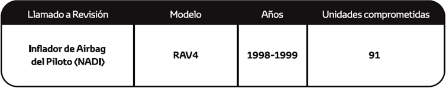
Es preciso señalar que a la fecha no se han registrado casos en nuestro país por esta condición, que hayan comprometido la seguridad del vehículo ni la de sus ocupantes, siendo las medidas adoptadas de carácter estrictamente preventivas y realizadas con el fin de dar tranquilidad y seguridad a todos nuestros clientes. Al ser un Llamado a Revisión global, nuestra casa matriz ha informado que, para algunos mercados como el nuestro, la contramedida a implementar no cuenta con fecha estimada de llegada considerando la situación actual de emergencia mundial, estamos realizando el máximo esfuerzo para resolver esta situación a la brevedad. En este sentido, para poder determinar si su vehículo se encuentra involucrado en el Llamado a Revisión, les solicitamos ingresar a nuestra página web www.toyotaperu.com.pe en el link denominado "Llamado a Revisión", ingresando su número de identificación vehicular - VIN, a fin de verificar si su vehículo se encuentra comprendido dentro de la medida preventiva. En caso su vehículo se encuentre comprendido, agradecemos se sirva llenar el formulario requerido en la web con todos los datos solicitados, con la finalidad que cuando tengamos disponibilidad de los componentes podamos atenderlos progresivamente a través de nuestra red de concesionarios autorizados, quienes inspeccionarán las unidades y a partir de ello determinarán si es necesario o no el reemplazo de algún componente. Le recordamos que las revisiones preventivas no tendrán costo. Para cualquier consulta adicional puede comunicarse gratuitamente con el centro de atención al cliente al teléfono 0-800-00669 (Horario de atención de L-V de 8:30 am - 5:00 pm) y/o escribir al correo electrónico cac@toyotaperu.com.pe. Toyota del Perú agradece su preferencia y comprensión por los inconvenientes que este Llamado a Revisión preventivo pueda ocasionarle. Sin embargo, nuestro objetivo es brindarle un producto de alta calidad y buscar su entera satisfacción.
TOYOTA DEL PERÚ S.A.
ADVERTENCIA A NUESTROS CLIENTES
TOVOTA DEL PERÚ S.A. -COMUNICA EXTENSIÓN DE "LLAMADO A REVISIÓN VOLUNTARIO DE BOMBA DE COMBUSTIBLE TOVOTA/ LEXUS"
Toyota del Perú S.A. informa a sus clientes que nuestra casa matriz ha realizado una extensión al Llamado a Revisión preventivo y voluntario en diferentes mercados, incluyendo el nuestro, relacionado a la bomba de combustible, los vehículos involucrados están equipados con una bomba de combustible de baja presión, ubicada en el tanque de combustible, que suministra presión al sistema de inyección de combustible. Estas bombas incluyen impulsores fabricados con menor densidad y con menor resistencia superficial. Si estos impulsores estuvieron expuestos al secado del solvente de producción durante períodos de tiempo más largos, pueden ocurrir niveles más altos de agrietamiento superficial. En esta condición, puede ocurrir una absorción excesiva de combustible, lo que resulta en una mayor deformación del impulsor. En algunos casos, el impulsor puede deformarse hasta un punto que crea una interferencia suficiente con el cuerpo de la bomba y hace que la bomba de combustible deje de funcionar. Una bomba de combustible inoperativa debido a estas condiciones, podría provocar la iluminación de los indicadores de advertencia principal y de control del motor, funcionamiento irregular del motor, motor sin arranque y/o bloqueo del vehículo mientras se conduce a baja velocidad. Sin embargo, en raras ocasiones, el vehículo se puede atascar mientras se conduce a velocidades más altas, lo que aumenta el riesgo de un choque. Dichas medidas han sido diseñadas obedeciendo nuestras políticas de control de calidad a fin de evitar cualquier situación anómala que pudiera presentarse a futuro en los vehículos comprendidos de acuerdo a las características en el siguiente cuadro:
Es preciso señalar que a la fecha no se han registrado casos en nuestro país por esta condición, que hayan comprometido la seguridad del vehículo ni la de sus ocupantes, siendo las medidas adoptadas de carácter estrictamente preventivas y realizadas con el fin de dar tranquilidad y seguridad a todos nuestros clientes. Al ser un Llamado a Revisión global, nuestra casa matriz ha informado que, para algunos mercados como el nuestro, la contramedida a implementar no cuenta con fecha estimada de llegada considerando la situación actual de emergencia mundial, estamos realizando el máximo esfuerzo para resolver esta situación a la brevedad. En este sentido, para poder determinar si su vehículo se encuentra involucrado en el Llamado a Revisión, les solicitamos ingresar a nuestra página web www.toyotaperu.com.pe.pe en el link denominado "Llamado a Revisión", ingresando su número de identificación vehicular - VIN, a fin de verificar si su vehículo se encuentra comprendido dentro de la medida preventiva. En caso su vehículo se encuentre comprendido, agradecemos se sirva llenar el formulario requerido en la web con todos los datos solicitados, con la finalidad que cuando tengamos disponibilidad de los componentes podamos atenderlos progresivamente a través de nuestra red de concesionarios autorizados, quienes inspeccionarán las unidades y a partir de ello determinarán si es necesario o no el reemplazo de algún componente. Le recordamos que las revisiones preventivas no tendrán costo. Para cualquier consulta adicional puede comunicarse gratuitamente con el centro de atención al cliente al teléfono 0-800-00669 (Horario de atención de L-V de 9:00 am - 5:00 pm) y/o escribir al correo electrónicocac@toyotaperu.com.pe. Toyota del Perú agradece su preferencia y comprensión por los inconvenientes que esta extensión de Llamado a Revisión preventivo pueda ocasionarle. Sin embargo, nuestro objetivo es brindarle un producto de alta calidad y buscar su entera satisfacción.
TOYOTA DEL PERÚ S.A.
ADVERTENCIA A NUESTROS CLIENTES
TOYOTA DEL PERÚ S.A. – COMUNICA EXTENSIÓN DE "LLAMADO A REVISIÓN VOLUNTARIO DE BOMBA DE COMBUSTIBLE"
Toyota del Perú S.A. informa a sus clientes que nuestra casa matriz ha realizado una extensión al Llamado a Revisión preventivo y voluntario en diferentes mercados, incluyendo el nuestro, relacionado a la bomba de combustible, los vehículos involucrados están equipados con una bomba de combustible de baja presión, ubicada en el tanque de combustible, que suministra presión al sistema de inyección de combustible. Estas bombas incluyen impulsores fabricados con menor densidad y resistencia superficial. Si estos impulsores estuvieron expuestos al secado del solvente de producción durante períodos de tiempo más largos, pueden ocurrir niveles más altos de agrietamiento superficial. En esta condición, puede ocurrir una absorción excesiva de combustible, lo que resulta en una mayor deformación del impulsor. En algunos casos, el impulsor puede deformarse hasta un punto que crea una interferencia suficiente con el cuerpo de la bomba y hacer que la bomba de combustible deje de funcionar. Una bomba de combustible inoperativa debido a estas condiciones podría provocar la iluminación de los indicadores de advertencia principal y de control del motor, funcionamiento irregular del motor, motor sin arranque y/o bloqueo del vehículo mientras se conduce a baja velocidad. Sin embargo, en raras ocasiones, el vehículo se puede atascar mientras se conduce a velocidades más altas, lo que aumenta el riesgo de un choque. Dichas medidas han sido diseñadas obedeciendo nuestras políticas de control de calidad a fin de evitar cualquier situación anómala que pudiera presentarse a futuro en los vehículos comprendidos de acuerdo a las características en el siguiente cuadro:
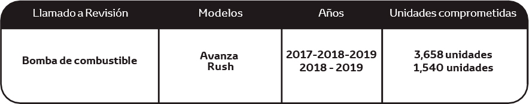
Es preciso señalar que a la fecha no se han registrado casos en nuestro país por esta condición, que hayan comprometido la seguridad del vehículo ni la de sus ocupantes, siendo las medidas adoptadas de carácter estrictamente preventivas y realizadas con el fin de dar tranquilidad y seguridad a todos nuestros clientes. Al ser un Llamado a Revisión global, nuestra casa matriz ha informado que, para algunos mercados como el nuestro, la contramedida a implementar no cuenta con fecha estimada de llegada considerando la situación actual de emergencia mundial, estamos realizando el máximo esfuerzo para resolver esta situación a la brevedad. En este sentido, para poder determinar si su vehículo se encuentra involucrado en el Llamado a Revisión, les solicitamos ingresar a nuestra página web www.toyotaperu.com.pe en el link denominado "Llamado a Revisión", ingresando su número de identificación vehicular - VIN, a fin de verificar si su vehículo se encuentra comprendido dentro de la medida preventiva. En caso su vehículo se encuentre comprendido, agradecemos se sirva llenar el formulario requerido en la web con todos los datos solicitados, con la finalidad que cuando tengamos disponibilidad de los componentes podamos atenderlos progresivamente a través de nuestra red de concesionarios autorizados, quienes inspeccionarán las unidades y a partir de ello determinarán si es necesario o no el reemplazo de algún componente. Le recordamos que las revisiones preventivas no tendrán costo. Para cualquier consulta adicional puede comunicarse gratuitamente con el centro de atención al cliente al teléfono 0-800-00669 (Horario de atención de L-V de 9:00 am - 5:00 pm) y/o escribir al correo electrónico cac@toyotaperu.com.pe. Toyota del Perú agradece su preferencia y comprensión por los inconvenientes que este Llamado a Revisión preventivo pueda ocasionarle. Sin embargo, nuestro objetivo es brindarle un producto de alta calidad y buscar su entera satisfacción.
TOYOTA DEL PERÚ S.A.
ADVERTENCIA A NUESTROS CLIENTES
TOYOTA DEL PERÚ S.A. – COMUNICA "LLAMADO A REVISIÓN VOLUNTARIO DE BOMBA DE COMBUSTIBLE DE ALTA PRESIÓN"
Toyota del Perú S.A. informa a sus clientes que nuestra casa matriz ha implementado un Llamado a Revisión preventivo y voluntario en diferentes mercados, incluyendo el nuestro, relacionado con la bomba de combustible de alta presión, el interior de la bomba puede desgastarse o dañarse con el tiempo durante el funcionamiento, debido al rendimiento de resistencia a la presión insuficiente de los componentes contra la presión del combustible. Si esto ocurriera, la tensión se concentra en la parte soldada de la bomba, lo que podría causar grietas en la soldadura y provocar una fuga de combustible. Dichas medidas han sido diseñadas obedeciendo nuestras políticas de control de calidad a fin de evitar cualquier situación anómala que pudiera presentarse a futuro en los vehículos comprendidos de acuerdo a las características en el siguiente cuadro:

Es preciso señalar que a la fecha no se han registrado casos en nuestro país por esta condición, que hayan comprometido la seguridad del vehículo ni la de sus ocupantes, siendo las medidas adoptadas de carácter estrictamente preventivas y realizadas con el fin de dar tranquilidad y seguridad a todos nuestros clientes. Al ser un Llamado a Revisión global, nuestra casa matriz ha informado que, para algunos mercados como el nuestro, la contramedida a implementar no cuenta con fecha estimada de llegada considerando la situación actual de emergencia mundial, estamos realizando el máximo esfuerzo para resolver esta situación a la brevedad. En este sentido, para poder determinar si su vehículo se encuentra involucrado en el Llamado a Revisión, les solicitamos ingresar a nuestra página web www.toyotaperu.com.pe en el link denominado "Llamado a Revisión", ingresando su número de identificación vehicular - VIN, a fin de verificar si su vehículo se encuentra comprendido dentro de la medida preventiva. En caso su vehículo se encuentre comprendido, agradecemos se sirva llenar el formulario requerido en la web con todos los datos solicitados, con la finalidad que cuando tengamos disponibilidad de los componentes podamos atenderlos progresivamente a través de nuestra red de concesionarios autorizados, quienes inspeccionarán las unidades y a partir de ello determinarán si es necesario o no el reemplazo de algún componente. Le recordamos que las revisiones preventivas no tendrán costo. Para cualquier consulta adicional puede comunicarse gratuitamente con el centro de atención al cliente al teléfono 0-800-00669 (Horario de atención de L-V de 9:00 am - 5:00 pm) y/o escribir al correo electrónico cac@toyotaperu.com.pe. Toyota del Perú agradece su preferencia y comprensión por los inconvenientes que este Llamado a Revisión preventivo pueda ocasionarle. Sin embargo, nuestro objetivo es brindarle un producto de alta calidad y buscar su entera satisfacción.
TOYOTA DEL PERÚ S.A.
ADVERTENCIA A NUESTROS CLIENTES
COMUNICA EXTENSIÓN DE "LLAMADO A REVISIÓN VOLUNTARIO DE BOMBA DE COMBUSTIBLE MODELO GT 86.
Toyota del Perú S.A. informa que nuestra casa matriz ha realizado una extensión al Llamado a Revisión preventivo y voluntario en diferentes mercados, incluyendo el nuestro, relacionado a la bomba de combustible de baja presión, ubicada en el tanque de combustible, que suministra presión al sistema de inyección de combustible. Estas bombas incluyen impulsores fabricados con menor densidad y con menor resistencia superficial. Si estos impulsores estuvieron expuestos al secado del solvente de producción durante períodos de tiempo más largos, pueden ocurrir niveles más altos de agrietamiento superficial. En esta condición, puede ocurrir una absorción excesiva de combustible, lo que resulta una mayor deformación del impulsor. En algunos casos, el impulsor puede deformarse hasta un punto que crea una interferencia suficiente con el cuerpo de la bomba para hacer que la bomba de combustible deje de funcionar, lo que podría provocar la iluminación de los indicadores de advertencia principal y de control del motor, funcionamiento irregular del motor, motor sin arranque y/o bloqueo del vehículo mientras se conduce a baja velocidad.
Es preciso señalar que a la fecha no se han registrado casos en nuestro país por esta condición, que hayan comprometido la seguridad del vehículo ni la de sus ocupantes, siendo las medidas adoptadas de carácter estrictamente preventivas y realizadas con el fin de dar tranquilidad y seguridad a todos nuestros clientes. Sin embargo, en raras ocasiones, el vehículo se puede atascar mientras se conduce a velocidades más altas, lo que podría aumentar el riesgo de un choque, si no se toma en cuenta los avisos.
En el Perú están comprendidos en esta extensión únicamente 11 vehículos del modelo GT86 fabricados en el 2018.
Al ser un Llamado a Revisión global, nuestra casa matriz ha informado que, para algunos mercados como el nuestro, la contramedida a implementar no cuenta con fecha estimada de llegada considerando la situación actual de emergencia mundial, estamos realizando el máximo esfuerzo para resolver esta situación a la brevedad
En ese sentido, con la finalidad de que tenga la mejor atención, estaremos informándole el arribo de la contramedida y apoyándolo en coordinar su cita, para ello deberá enviarnos un correo a la dirección electrónica: cac@toyotaperu.com.pe, consignando la siguiente información: Fecha, hora, local del concesionario elegido para atenderse, tome en cuenta que el presente Llamado a Revisión no genera ningún costo al cliente.
Para cualquier consulta adicional puede comunicarse gratuitamente con el centro de atención al cliente al teléfono 0-800- 00669 (Horario de atención de L-V de 9:00 am - 5:15 pm). Toyota del Perú agradece su preferencia y comprensión por los inconvenientes que éste Llamado a Revisión preventivo pueda ocasionarle, sin embargo, nuestro objetivo es brindarle un producto de alta calidad y buscar su entera satisfacción.
TOYOTA DEL PERÚ S.A.
ADVERTENCIA A NUESTROS CLIENTES
TOYOTA DEL PERÚ S.A. - COMUNICA "LLAMADO A REVISIÓN VOLUNTARIO DE INSPECCIÓN E INICIALIZACIÓN SENSOR DE ONDAS MILIMÉTRICAS (RADAR)"
Toyota del Perú S.A. informa a sus clientes que nuestra casa matriz ha implementado un Llamado a Revisión preventivo y voluntario en diferentes mercados, incluyendo el nuestro, relacionado a la inspección e inicialización del sensor de ondas milimétricas (radar). Los vehículos comprendidos están equipados con un sensor de ondas milimétricas (radar) y una cámara para detectar vehículos y/o objetos posicionados en la parte frontal. Este sensor tiene como función brindar soporte para asistencia al conductor, incluyendo el Sistema de Pre - Colisión conocido como PCS. Bajo ciertas circunstancias, es posible que la inicialización del sensor no se haya completado correctamente al momento del ensamblaje, si tiene esta condición, el sensor no se activará. En esta condición, el Sistema PCS no podría detectar un vehículo al frente y no proporcionaría una advertencia o asistencia de frenado, de acuerdo a su diseño, lo que podría ocasionar que, al no haber advertencia al conductor, exista un riesgo de un impacto en ciertas situaciones de conducción. Dichas medidas han sido diseñadas obedeciendo nuestras políticas de control de calidad a fin de evitar cualquier situación anómala que pudiera presentarse a futuro en los vehículos comprendidos de acuerdo a las características en el siguiente cuadro:
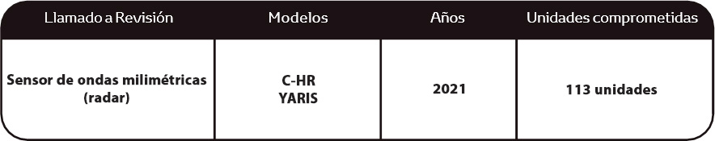
Es preciso señalar que a la fecha no se han registrado casos en nuestro país por esta condición, que hayan comprometido la seguridad del vehículo ni la de sus ocupantes, siendo las medidas adoptadas de carácter estrictamente preventivas y realizadas con el fin de dar tranquilidad y seguridad a todos nuestros clientes. Al ser un Llamado a Revisión global, nuestra casa matriz ha informado que, para algunos mercados como el nuestro, la contramedida a implementar no cuenta con fecha estimada de llegada considerando la situación actual de emergencia mundial, estamos realizando el máximo esfuerzo para resolver esta situación a la brevedad. En este sentido, para poder determinar si su vehículo se encuentra involucrado en el Llamado a Revisión, les solicitamos ingresar a nuestra página web www.toyotaperu.com.pe en el link denominado "Llamado a Revisión", ingresando su número de identificación veh icular - VI N, a fin de verificar si su vehículo se encuentra comprendido dentro de la medida preventiva. En caso su vehículo se encuentre comprendido, agradecemos se sirva llenar el formulario requerido en la web con todos los datos solicitados, con la finalidad que cuando tengamos implementada la contramedida, podamos atenderlos progresivamente a través de nuestra red de concesionarios autorizados, quienes inspeccionarán las unidades para la ejecución de la contramedida. Le recordamos que las revisiones preventivas no tendrán costo. Para cualquier consulta adicional puede comunicarse gratuitamente con el centro de atención al cliente al teléfono 0-800- 00669 (Horario de atención de L-V de 9:00 am -5:00 pm) y/o escribir al correo electrónico cac@toyotaperu.com.pe. Toyota del Perú agradece su preferencia y comprensión por los inconvenientes que este Llamado a Revisión preventivo pueda ocasionarle. Sin embargo, nuestro objetivo es brindarle un producto de alta calidad y buscar su entera satisfacción.
TOYOTA DEL PERÚ S.A.
ADVERTENCIA A NUESTROS CLIENTES
TOVOTA DEL PERÚ S.A. - COMUNICA "LLAMADO A REVISIÓN VOLUNTARIO DE CINTURÓN DE SEGURIDAD VARIS NSP"
Toyota del Perú S.A. informa a sus clientes que nuestra casa matriz ha informado sobre un Llamado a Revisión preventivo y voluntario en diferentes mercados, incluyendo el nuestro, Los vehículos comprendidos están equipados con cinturones de seguridad delanteros (Piloto y Copiloto), el retractar tiene un eje de torsión que cumple la función de limitador de fuerza para controlar las cargas sobre el ocupante, aplicadas por el cinturón de seguridad después que el retractar se traba durante un choque. El proveedor de dichos componentes detecto que durante un periodo de producción especifico existe la probabilidad que el eje de torsión se haya fabricado incorrectamente. En esta condición, es posible que el !imitador de fuerza no opere según lo diseñado, lo que generarla que el cinturón de seguridad se extienda más de lo previsto después del bloqueo. Esto podría aumentar la cantidad de desplazamiento hacia delante de los ocupantes, lo que aumenta el riesgo de lesiones en caso de un choque lo suficientemente grave como para activar un ]imitador de fuerza. Precisamos que dicha condición no cumple el Reglamento de Seguridad para vehículos de carretera, Artículo 22-3 en Japón y ECE16 6.4.1.3 aplicable en ciertos países. Dichas medidas han sido diseñadas obedeciendo nuestras políticas de control de calidad a fin de evitar cualquier situación anómala que pudiera presentarse a futuro en los vehículos comprendidos de acuerdo a las características en el siguiente cuadro:
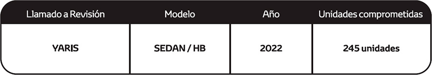
Es preciso señalar que a la fecha no se han registrado casos en nuestro país por esta condición, que hayan comprometido la seguridad del vehículo ni la de sus ocupantes, siendo las medidas adoptadas de carácter estrictamente preventivas y realizadas con el fin de dar tranquilidad y seguridad a todos nuestros clientes. La contramedida a implementar tendrá abastecimiento de componentes de manera progresiva, estamos realizando el máximo esfuerzo para resolver esta situación a la brevedad. En este sentido, para poder determinar si su vehículo se encuentra involucrado en el Llamado a Revisión, les solicitamos ingresar a nuestra página web www.toyotaperu.com.pe en el link denominado "Llamado a Revisión", ingresando su número de identificación vehicular -VI N, a fin de verificar si su vehículo se encuentra comprendido dentro de la medida preventiva. En caso su vehículo se encuentre comprendido, agradecemos se sirva llenar el formulario requerido en la web con todos los datos solicitados, con la finalidad que cuando tengamos implementada la contramedida, podamos atenderlos progresivamente a través de nuestra red de concesionarios autorizados, quienes inspeccionarán las unidades para la ejecución de la contramedida. Le recordamos que las revisiones preventivas no tendrán costo. Para cualquier consulta adicional puede comunicarse gratuitamente con el centro de atención al cliente al teléfono 0-800-00669 (Horario de atención de L-V de 9:00 am -5:00 pm) y/o escribir al correo electrónico cac@toyotaperu.com.pe. Toyota del Perú agradece su preferencia y comprensión por los inconvenientes que este Llamado a Revisión preventivo pueda ocasionarle. Sin embargo, nuestro objetivo es brindarle un producto de alta calidad y buscar su entera satisfacción.
TOYOTA DEL PERÚ S.A.
ADVERTENCIA A NUESTROS CLIENTES
TOYOTA DEL PERÚ S.A. - COMUNICA "LLAMADO A REVISIÓN VOLUNTARIO DE AIRBAG FRONTAL PILOTO FABRICADOS EN TMUK"
Toyota del Perú S.A. comunica a sus clientes que nuestra casa matriz ha informado sobre un Llamado a Revisión preventivo y voluntario en diferentes mercados, incluyendo el nuestro, con relación al reemplazo del airbag frontal del lado del conductor (piloto) en ciertos Toyota Avensis fabricados en TMUK (Toyota Motor UK)
Los vehículos comprendidos están equipados con una bolsa de aire delantera para el conductor (piloto), con un inflador de doble tapa, teniendo la probabilidad de que la densidad del propulsor en el inflador se reduzca con el paso del tiempo por los efectos de los ciclos de alta temperatura y la humedad dentro del propulsor, lo que puede tener como consecuencia que el propulsor se vuelva polvoriento. Si esto ocurriera, en caso se active la bolsa de aire frontal del conductor, el inflador podría romperse pudiendo algunos fragmentos de metal pasar a través de la bolsa de aire y entren en el interior del vehículo, a altas velocidades lo que puede causar lesiones o la muerte a los ocupantes del vehículo.
Dichas medidas han sido diseñadas obedeciendo nuestras políticas de control de calidad a fin de evitar cualquier situación anómala que pudiera presentarse a futuro en los vehículos comprendidos de acuerdo con las características en el siguiente cuadro:
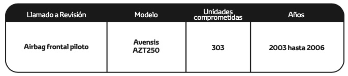
Es preciso señalar que a la fecha no se han registrado casos en nuestro país por esta condición, que hayan comprometido la seguridad del vehículo ni la de sus ocupantes, siendo las medidas adoptadas de carácter estrictamente preventivas y realizadas con el fin de dar tranquilidad y seguridad a todos nuestros clientes. La contramedida a implementar tendrá abastecimiento de componentes de manera progresiva, estamos realizando el máximo esfuerzo para resolver esta situación a la brevedad. En este sentido, para poder determinar si su vehículo se encuentra involucrado en el Llamado a Revisión, les solicitamos ingresar a nuestra página web www.toyotaperu.com.pe en el link denominado "Llamado a Revisión”, ingresando su número de identificación vehicular - VI N, a fin de verificar si su vehículo se encuentra comprendido dentro de la medida preventiva. En caso su vehículo se encuentre comprendido, agradecemos se sirva llenar el formulario requerido en la web con todos los datos solicitados, con la finalidad que cuando tengamos implementada la contramedida, podamos atenderlos progresivamente a través de nuestra red de concesionarios autorizados, quienes inspeccionarán las unidades para la ejecución de la contramedida. Le recordamos que las revisiones preventivas no tendrán costo. Para cualquier consulta adicional puede comunicarse gratuitamente con el centro de atención al cliente al teléfono 0-800-00669 (Horario de atención de L-V de 9:00 am -5:00 pm) y/o escribir al correo electrónico cac@toyotaperu.com.pe. Toyota del Perú agradece su preferencia y comprensión por los inconvenientes que este Llamado a Revisión preventivo pueda ocasionarle. Sin embargo, nuestro objetivo es brindarle un producto de alta calidad y buscar su entera satisfacción.
TOYOTA DEL PERÚ S.A.
ADVERTENCIA A NUESTROS CLIENTES
TOYOTA DEL PERÚ S.A. - COMUNICA "LLAMADO A REVISIÓN VOLUNTARIO DE REEMPLAZO DEL CONJUNTO DEL TUBO DE VENTILACIÓN DEL TANQUE DE COMBUSTIBLE"
Toyota del Perú S.A. comunica a sus clientes que nuestra casa matriz ha informado sobre un Llamado a Revisión preventivo y voluntario en diferentes mercados, incluyendo el nuestro, con relación al reemplazo del conjunto del tubo de ventilación de gases del tanque de combustible.
Los vehículos involucrados están equipados con una unidad de control de emisiones evaporativas de combustible (conjunto de tubo de ventilación del tanque de combustible) que está unido al tanque de combustible por una brida. El conjunto del tubo de ventilación del tanque de combustible evita que el vapor de combustible que se crea en el tanque de combustible se libere directamente a la atmósfera. Debido al diseño de la brida, existe la posibilidad que se desarrolle una grieta relacionada con la tensión en la superficie exterior, con el tiempo la grieta podría expandirse y dependiendo del tamaño de esta, podría permitir que se filtre el combustible por la grieta. Si eso sucediera dependiendo de la cantidad de combustible que se escape al estar en contacto con una fuente de ignición se incrementa el riesgo de amago de incendio en el vehículo.
Dichas medidas han sido diseñadas obedeciendo nuestras políticas de control de calidad a fin de evitar cualquier situación anómala que pudiera presentarse a futuro en los vehículos comprendidos de acuerdo con las características en el siguiente cuadro:
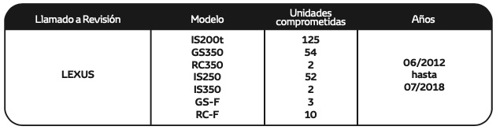
Es preciso señalar que a la fecha no se han registrado casos en nuestro país por esta condición, que hayan comprometido la seguridad del vehículo ni la de sus ocupantes, siendo las medidas adoptadas de carácter estrictamente preventivas y realizadas con el fin de dar tranquilidad y seguridad a todos nuestros clientes. La contramedida a implementar tendrá abastecimiento de componentes de manera progresiva, estamos realizando el máximo esfuerzo para resolver esta situación a la brevedad. En este sentido, para poder determinar si su vehículo se encuentra involucrado en el Llamado a Revisión, les solicitamos ingresar a nuestra página web www.toyotaperu.com.pe en el link denominado "Llamado a Revisión”, ingresando su número de identificación vehicular - VI N, a fin de verificar si su vehículo se encuentra comprendido dentro de la medida preventiva. En caso su vehículo se encuentre comprendido, agradecemos se sirva llenar el formulario requerido en la web con todos los datos solicitados, con la finalidad que cuando tengamos implementada la contramedida, podamos atenderlos progresivamente a través de nuestra red de concesionarios autorizados, quienes inspeccionarán las unidades para la ejecución de la contramedida. Le recordamos que las revisiones preventivas no tendrán costo. Para cualquier consulta adicional puede comunicarse gratuitamente con el centro de atención al cliente al teléfono 0-800-00669 (Horario de atención de L-V de 9:00 am -5:00 pm) y/o escribir al correo electrónico cac@toyotaperu.com.pe. Toyota del Perú agradece su preferencia y comprensión por los inconvenientes que este Llamado a Revisión preventivo pueda ocasionarle. Sin embargo, nuestro objetivo es brindarle un producto de alta calidad y buscar su entera satisfacción.
Estimado cliente, para una mejor consulta del código VIN de su vehículo,
le recomendamos considerar que el código VIN es de tipo alfanumérico con una
extensión de 17 dígitos, no se usa la letra “O”, tampoco símbolos y/o
espacios en su estructura
< Atrás